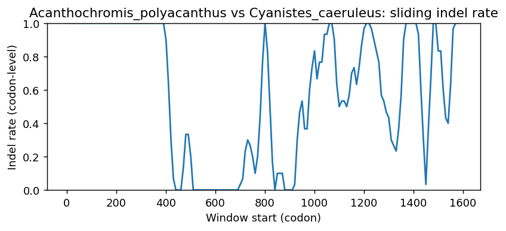

Ortholog Divergence Report
Input: INTS6.valid.longest.fa · N sequences: 597 · Aligned length: 1594 codons
Reference: Acanthochromis_polyacanthus
Quick risk overview
- LOW: 0
- INTERMEDIATE: 0
- HIGH: 177906


Composition & complexity per sequence
Saved as per_sequence_composition.csv. High low-complexity or repeat content can reduce BLAST sensitivity due to soft masking.
| id | GC | GC skew | CpG dens. | AA LCR frac | NT repeat frac | AA len | CDS len |
|---|---|---|---|---|---|---|---|
| Acanthochromis_polyacanthus | 0.57558 | -0.06532 | 0.05312 | 0.03256 | 0.75581 | 860 | 2580 |
| Tachyglossus_aculeatus | 0.46704 | -0.05213 | 0.02848 | 0.0 | 0.68839 | 890 | 2670 |
| Eubalaena_glacialis | 0.4208 | -0.00624 | 0.01427 | 0.0 | 0.7027 | 888 | 2664 |
| Rissa_tridactyla | 0.43056 | 0.01308 | 0.01878 | 0.01351 | 0.70796 | 888 | 2664 |
| Mirounga_angustirostris | 0.42014 | -0.00179 | 0.01654 | 0.0 | 0.70575 | 887 | 2661 |
| Lagenorhynchus_obliquidens | 0.42305 | -0.00266 | 0.01502 | 0.01464 | 0.70195 | 888 | 2664 |
| Dermochelys_coriacea | 0.42541 | -0.0151 | 0.01678 | 0.01285 | 0.72984 | 934 | 2802 |
| Oenanthe_melanoleuca | 0.43131 | 0.00609 | 0.01427 | 0.01351 | 0.71471 | 888 | 2664 |
| Tachysurus_fulvidraco | 0.5562 | -0.00556 | 0.04675 | 0.01622 | 0.75782 | 863 | 2589 |
| Miniopterus_natalensis | 0.41517 | -0.00723 | 0.01314 | 0.0 | 0.7012 | 888 | 2664 |
| Alligator_sinensis | 0.42118 | -0.00975 | 0.0115 | 0.0 | 0.70731 | 812 | 2436 |
| Oryzias_latipes | 0.56243 | -0.0482 | 0.05195 | 0.01375 | 0.72165 | 873 | 2619 |
| Alligator_mississippiensis | 0.43578 | -0.03025 | 0.01696 | 0.0 | 0.70132 | 885 | 2655 |
| Mustela_lutreola | 0.41911 | -0.0018 | 0.01618 | 0.0 | 0.71407 | 886 | 2658 |
| Capra_hircus | 0.43142 | -0.00348 | 0.01617 | 0.0 | 0.71928 | 887 | 2661 |
| Pristis_pectinata | 0.44233 | 0.01941 | 0.01904 | 0.01568 | 0.68757 | 893 | 2679 |
| Prionailurus_viverrinus | 0.42352 | 0.00089 | 0.01729 | 0.0 | 0.70575 | 887 | 2661 |
| Fukomys_damarensis | 0.41375 | 0.01181 | 0.01391 | 0.0 | 0.72003 | 887 | 2661 |
| Protopterus_annectens | 0.42561 | 0.05487 | 0.01846 | 0.0 | 0.72203 | 885 | 2655 |
| Petromyzon_marinus | 0.6488 | -0.03855 | 0.10543 | 0.15863 | 0.7542 | 933 | 2799 |
| Corvus_cornix_cornix | 0.41595 | 0.01475 | 0.01391 | 0.01472 | 0.70675 | 815 | 2445 |
| Peromyscus_maniculatus_bairdii | 0.43778 | 0.00947 | 0.01622 | 0.0 | 0.71908 | 884 | 2652 |
| Denticeps_clupeoides | 0.51461 | -0.00467 | 0.02602 | 0.03001 | 0.77151 | 833 | 2499 |
| Columba_livia | 0.43356 | 0.00433 | 0.0199 | 0.01351 | 0.70571 | 888 | 2664 |
| Ovis_aries | 0.43217 | -0.00348 | 0.01617 | 0.0 | 0.71627 | 887 | 2661 |
| Cyanistes_caeruleus | 0.41937 | 0.03139 | 0.01176 | 0.01693 | 0.72873 | 709 | 2127 |
| Aptenodytes_forsteri | 0.418 | 0.01957 | 0.01596 | 0.01472 | 0.70225 | 815 | 2445 |
| Pungitius_pungitius | 0.60246 | -0.02974 | 0.06161 | 0.08735 | 0.77604 | 893 | 2679 |
| Octodon_degus | 0.4146 | -0.01089 | 0.01505 | 0.0 | 0.70579 | 886 | 2658 |
| Phasianus_colchicus | 0.42991 | 0.01573 | 0.01466 | 0.0 | 0.71928 | 887 | 2661 |
| Myotis_davidii | 0.40123 | -0.00102 | 0.00859 | 0.0 | 0.70225 | 815 | 2445 |
| Hippoglossus_hippoglossus | 0.55026 | -0.06181 | 0.04537 | 0.04195 | 0.7585 | 882 | 2646 |
| Corythoichthys_intestinalis | 0.55025 | -0.09027 | 0.04891 | 0.06636 | 0.74311 | 859 | 2577 |
| Psammomys_obesus | 0.431 | 0.01487 | 0.01509 | 0.0 | 0.70588 | 884 | 2652 |
| Lates_calcarifer | 0.53372 | -0.05528 | 0.03105 | 0.03103 | 0.71533 | 870 | 2610 |
| Latimeria_chalumnae | 0.43587 | -0.00428 | 0.01455 | 0.0179 | 0.7088 | 894 | 2682 |
| Emys_orbicularis | 0.42943 | -0.02098 | 0.0169 | 0.0 | 0.72222 | 888 | 2664 |
| Synchiropus_splendidus | 0.52762 | -0.08199 | 0.03555 | 0.04403 | 0.75357 | 863 | 2589 |
| Trachemys_scripta_elegans | 0.42996 | -0.00404 | 0.01704 | 0.0 | 0.73931 | 959 | 2877 |
| Vidua_chalybeata | 0.42568 | 0.00176 | 0.01427 | 0.01351 | 0.72673 | 888 | 2664 |
| Gavialis_gangeticus | 0.41995 | -0.01075 | 0.01273 | 0.0 | 0.69745 | 812 | 2436 |
| Chinchilla_lanigera | 0.41902 | -0.01525 | 0.01654 | 0.0 | 0.705 | 887 | 2661 |
| Phyllostomus_discolor | 0.50207 | -0.01198 | 0.04286 | 0.01804 | 0.71815 | 887 | 2661 |
| Dromaius_novaehollandiae | 0.43393 | -0.00346 | 0.02103 | 0.01351 | 0.7042 | 888 | 2664 |
| Microcebus_murinus | 0.41854 | 0.00987 | 0.01277 | 0.0 | 0.70383 | 888 | 2664 |
| Sphaeramia_orbicularis | 0.54257 | -0.06404 | 0.03858 | 0.01375 | 0.75907 | 873 | 2619 |
| Myotis_lucifugus | 0.40082 | 0.0 | 0.00859 | 0.0 | 0.7002 | 815 | 2445 |
| Hemiscyllium_ocellatum | 0.43468 | 0.019 | 0.0184 | 0.01577 | 0.67755 | 888 | 2664 |
| Silurus_meridionalis | 0.51012 | -0.00916 | 0.0261 | 0.02921 | 0.71417 | 856 | 2568 |
| Malaclemys_terrapin_pileata | 0.42868 | -0.01926 | 0.0169 | 0.0 | 0.72447 | 888 | 2664 |
| Oncorhynchus_kisutch | 0.56475 | -0.03799 | 0.03833 | 0.02759 | 0.73448 | 870 | 2610 |
| Poecilia_formosa | 0.57548 | -0.07723 | 0.06478 | 0.02989 | 0.72912 | 870 | 2610 |
| Chamaea_fasciata | 0.42605 | 0.00088 | 0.01352 | 0.01351 | 0.71772 | 888 | 2664 |
| Saccopteryx_leptura | 0.41939 | 0.00717 | 0.01466 | 0.0 | 0.70688 | 887 | 2661 |
| Dasypus_novemcinctus | 0.43656 | 0.00086 | 0.02178 | 0.0 | 0.69294 | 888 | 2664 |
| Scomber_scombrus | 0.56883 | -0.06533 | 0.05008 | 0.07509 | 0.75161 | 879 | 2637 |
| Manis_pentadactyla | 0.49756 | -0.02417 | 0.03647 | 0.0 | 0.7174 | 887 | 2661 |
| Patagioenas_fasciata | 0.43018 | 0.00698 | 0.01765 | 0.01351 | 0.70608 | 888 | 2664 |
| Camelus_bactrianus | 0.41986 | 0.00358 | 0.01543 | 0.0 | 0.71332 | 886 | 2658 |
| Mauremys_reevesii | 0.42937 | -0.00648 | 0.01706 | 0.0 | 0.73486 | 958 | 2874 |
| Pongo_abelii | 0.42014 | -0.00358 | 0.01391 | 0.0 | 0.71477 | 887 | 2661 |
| Dicentrarchus_labrax | 0.5567 | -0.06813 | 0.0414 | 0.02989 | 0.76513 | 870 | 2610 |
| Gorilla_gorilla_gorilla | 0.42165 | 0.00178 | 0.01579 | 0.0 | 0.70951 | 887 | 2661 |
| Sturnira_hondurensis | 0.46787 | -0.02651 | 0.02782 | 0.0 | 0.72041 | 887 | 2661 |
| Scomber_japonicus | 0.56578 | -0.07661 | 0.04835 | 0.04373 | 0.74952 | 869 | 2607 |
| Mus_caroli | 0.43552 | 0.01818 | 0.01433 | 0.01357 | 0.71719 | 884 | 2652 |
| Kogia_breviceps | 0.42117 | -0.00357 | 0.01389 | 0.01464 | 0.69745 | 888 | 2664 |
| Carassius_carassius | 0.5039 | -0.00542 | 0.02811 | 0.04215 | 0.76542 | 854 | 2562 |
| Cercocebus_atys | 0.41939 | 0.0 | 0.01353 | 0.0 | 0.71815 | 887 | 2661 |
| Triplophysa_rosa | 0.50898 | -0.01534 | 0.02655 | 0.0445 | 0.73185 | 854 | 2562 |
| Maylandia_zebra | 0.53923 | -0.066 | 0.05015 | 0.0 | 0.75277 | 871 | 2613 |
| Colobus_angolensis_palliatus | 0.41629 | 0.00268 | 0.01675 | 0.01562 | 0.71801 | 896 | 2688 |
| Gasterosteus_aculeatus | 0.60344 | -0.03038 | 0.06175 | 0.09091 | 0.76842 | 891 | 2673 |
| Sorex_fumeus | 0.41121 | -0.01189 | 0.01694 | 0.0 | 0.73025 | 886 | 2658 |
| Thunnus_thynnus | 0.56387 | -0.08027 | 0.04835 | 0.04258 | 0.74875 | 869 | 2607 |
| Sarcophilus_harrisii | 0.42107 | 0.00801 | 0.01275 | 0.0 | 0.72028 | 889 | 2667 |
| Odobenus_rosmarus_divergens | 0.41977 | -0.00627 | 0.01617 | 0.0 | 0.69748 | 887 | 2661 |
| Marmota_flaviventris | 0.41723 | -0.00812 | 0.0143 | 0.0 | 0.70504 | 886 | 2658 |
| Chionomys_nivalis | 0.4359 | 0.00865 | 0.01471 | 0.0 | 0.72474 | 884 | 2652 |
| Cynocephalus_volans | 0.41676 | 0.01172 | 0.01466 | 0.0 | 0.71815 | 887 | 2661 |
| Bos_indicus | 0.42031 | -0.00895 | 0.0127 | 0.0 | 0.70851 | 709 | 2127 |
| Mauremys_mutica | 0.42568 | -0.01587 | 0.0169 | 0.0 | 0.72485 | 888 | 2664 |
| Cygnus_atratus | 0.4283 | -0.00088 | 0.0154 | 0.01351 | 0.71321 | 888 | 2664 |
| Perca_flavescens | 0.55784 | -0.06139 | 0.04263 | 0.04795 | 0.75076 | 876 | 2628 |
| Lagenorhynchus_albirostris | 0.4223 | -0.00089 | 0.01502 | 0.01464 | 0.70045 | 888 | 2664 |
| Rhinichthys_klamathensis_goyatoka | 0.50331 | -0.01007 | 0.02496 | 0.03509 | 0.75283 | 855 | 2565 |
| Gracilinanus_agilis | 0.41163 | 0.01822 | 0.0122 | 0.0 | 0.72996 | 711 | 2133 |
| Eulemur_rufifrons | 0.41704 | 0.0063 | 0.01314 | 0.01351 | 0.70458 | 888 | 2664 |
| Malurus_melanocephalus | 0.4268 | 0.00264 | 0.01577 | 0.03378 | 0.7241 | 888 | 2664 |
| Platichthys_flesus | 0.54096 | -0.06629 | 0.04381 | 0.04417 | 0.7433 | 883 | 2649 |
| Semicossyphus_pulcher | 0.5711 | -0.07827 | 0.05204 | 0.01618 | 0.7499 | 865 | 2595 |
| Brienomyrus_brachyistius | 0.5699 | -0.04679 | 0.04002 | 0.03771 | 0.74438 | 875 | 2625 |
| Camelus_ferus | 0.41986 | 0.00358 | 0.01543 | 0.0 | 0.71332 | 886 | 2658 |
| Trachypithecus_francoisi | 0.42089 | 0.00179 | 0.01504 | 0.0 | 0.71552 | 887 | 2661 |
| Macaca_mulatta | 0.41902 | -0.00269 | 0.01353 | 0.0 | 0.71815 | 887 | 2661 |
| Ammospiza_caudacuta | 0.43056 | 0.00262 | 0.01389 | 0.01351 | 0.7211 | 888 | 2664 |
| Leptosomus_discolor | 0.42004 | 0.01266 | 0.018 | 0.01472 | 0.71738 | 815 | 2445 |
| Eurypyga_helias | 0.42004 | 0.0224 | 0.01718 | 0.01472 | 0.71084 | 815 | 2445 |
| Monodelphis_domestica | 0.42332 | 0.00266 | 0.015 | 0.0 | 0.73678 | 889 | 2667 |
| Galeopterus_variegatus | 0.40418 | 0.02533 | 0.01106 | 0.0 | 0.71048 | 814 | 2442 |
| Phalacrocorax_carbo | 0.43067 | 0.00175 | 0.0188 | 0.01353 | 0.70951 | 887 | 2661 |
| Meriones_unguiculatus | 0.42798 | 0.01322 | 0.01433 | 0.0 | 0.70437 | 884 | 2652 |
| Misgurnus_anguillicaudatus | 0.49416 | -0.00709 | 0.02493 | 0.03037 | 0.73871 | 856 | 2568 |
| Pygocentrus_nattereri | 0.55035 | -0.00426 | 0.04529 | 0.0445 | 0.75839 | 854 | 2562 |
| Mesocricetus_auratus | 0.43363 | 0.02609 | 0.01471 | 0.0 | 0.71908 | 884 | 2652 |
| Homo_sapiens | 0.41977 | 0.0009 | 0.01316 | 0.0 | 0.71251 | 887 | 2661 |
| Melopsittacus_undulatus | 0.42718 | -0.00703 | 0.01727 | 0.01802 | 0.71284 | 888 | 2664 |
| Poeciliopsis_prolifica | 0.56935 | -0.08345 | 0.06133 | 0.03793 | 0.74904 | 870 | 2610 |
| Amblyraja_radiata | 0.43561 | 0.02999 | 0.0224 | 0.01568 | 0.69951 | 893 | 2679 |
| Peromyscus_californicus_insignis | 0.43703 | 0.00604 | 0.01471 | 0.0 | 0.71041 | 884 | 2652 |
| Macaca_fascicularis | 0.41902 | -0.00269 | 0.01353 | 0.0 | 0.71815 | 887 | 2661 |
| Neofelis_nebulosa | 0.42503 | 0.00088 | 0.01729 | 0.0 | 0.70725 | 887 | 2661 |
| Tyto_alba | 0.43844 | -0.00856 | 0.02178 | 0.01577 | 0.71847 | 888 | 2664 |
| Leopardus_geoffroyi | 0.4239 | 0.0 | 0.01767 | 0.0 | 0.70575 | 887 | 2661 |
| Ctenopharyngodon_idella | 0.50039 | 0.0 | 0.02538 | 0.05152 | 0.74083 | 854 | 2562 |
| Sylvia_atricapilla | 0.42879 | 0.00438 | 0.01466 | 0.01353 | 0.70575 | 887 | 2661 |
| Saccopteryx_bilineata | 0.41864 | 0.01436 | 0.01429 | 0.0 | 0.70387 | 887 | 2661 |
| Megalops_cyprinoides | 0.58775 | -0.06905 | 0.0515 | 0.06426 | 0.7174 | 887 | 2661 |
| Clinocottus_analis | 0.63281 | -0.01546 | 0.08506 | 0.08916 | 0.79609 | 886 | 2658 |
| Bombina_bombina | 0.41304 | 0.00439 | 0.01359 | 0.0 | 0.65489 | 736 | 2208 |
| Pterocles_gutturalis | 0.41656 | 0.00686 | 0.01551 | 0.01469 | 0.69971 | 817 | 2451 |
| Gouania_willdenowi | 0.50536 | -0.07202 | 0.02875 | 0.04368 | 0.71034 | 870 | 2610 |
| Rattus_rattus | 0.4413 | 0.0231 | 0.01511 | 0.0 | 0.71423 | 883 | 2649 |
| Embiotoca_jacksoni | 0.57234 | -0.05712 | 0.05752 | 0.06088 | 0.74671 | 887 | 2661 |
| Callorhinus_ursinus | 0.41902 | -0.00987 | 0.01466 | 0.0 | 0.6956 | 887 | 2661 |
| Phascolarctos_cinereus | 0.42464 | -0.00463 | 0.01378 | 0.0 | 0.71861 | 847 | 2541 |
| Astyanax_mexicanus | 0.53123 | 0.02572 | 0.03905 | 0.06323 | 0.75098 | 854 | 2562 |
| Corvus_hawaiiensis | 0.42943 | 0.0035 | 0.01765 | 0.01351 | 0.70458 | 888 | 2664 |
| Sebastes_umbrosus | 0.59955 | -0.04353 | 0.06975 | 0.08054 | 0.81394 | 894 | 2682 |
| Gambusia_affinis | 0.57039 | -0.07599 | 0.06025 | 0.03452 | 0.72881 | 869 | 2607 |
| Strigops_habroptila | 0.43093 | 0.00871 | 0.02028 | 0.01802 | 0.72072 | 888 | 2664 |
| Ovis_canadensis | 0.43179 | -0.00261 | 0.01617 | 0.0 | 0.71477 | 887 | 2661 |
| Indicator_indicator | 0.43581 | -0.01464 | 0.0169 | 0.0 | 0.70646 | 888 | 2664 |
| Salvelinus_fontinalis | 0.56995 | -0.03555 | 0.0413 | 0.04587 | 0.73739 | 872 | 2616 |
| Terrapene_triunguis | 0.42943 | -0.02448 | 0.0169 | 0.0 | 0.72523 | 888 | 2664 |
| Cottoperca_gobio | 0.57218 | -0.04095 | 0.05709 | 0.06576 | 0.75208 | 882 | 2646 |
| Arvicanthis_niloticus | 0.43186 | 0.01573 | 0.01284 | 0.01472 | 0.72027 | 883 | 2649 |
| Motacilla_alba_alba | 0.43206 | 0.00608 | 0.01465 | 0.01351 | 0.70946 | 888 | 2664 |
| Pipistrellus_kuhlii | 0.41291 | -0.00182 | 0.01389 | 0.0 | 0.71246 | 888 | 2664 |
| Canis_lupus_dingo | 0.42137 | 0.0 | 0.01656 | 0.0 | 0.69526 | 886 | 2658 |
| Lutra_lutra | 0.41714 | -0.0036 | 0.01429 | 0.0 | 0.7065 | 887 | 2661 |
| Equus_przewalskii | 0.41751 | -0.0063 | 0.01541 | 0.0 | 0.71214 | 887 | 2661 |
| Melospiza_georgiana | 0.43243 | 0.00868 | 0.01427 | 0.01351 | 0.71959 | 888 | 2664 |
| Parambassis_ranga | 0.55543 | -0.06584 | 0.05183 | 0.06971 | 0.74552 | 875 | 2625 |
| Vulpes_lagopus | 0.42175 | -0.00268 | 0.01656 | 0.0 | 0.70015 | 886 | 2658 |
| Ornithorhynchus_anatinus | 0.4603 | -0.0594 | 0.02623 | 0.01461 | 0.68989 | 890 | 2670 |
| Chelonia_mydas | 0.42337 | -0.01435 | 0.01751 | 0.01286 | 0.72526 | 933 | 2799 |
| Pogoniulus_pusillus | 0.43806 | -0.00943 | 0.01802 | 0.01351 | 0.70758 | 888 | 2664 |
| Seriola_aureovittata | 0.56678 | -0.08383 | 0.04978 | 0.02918 | 0.75122 | 891 | 2673 |
| Nomascus_leucogenys | 0.41939 | 0.00358 | 0.01429 | 0.0 | 0.70876 | 887 | 2661 |
| Nothoprocta_perdicaria | 0.45808 | 0.00536 | 0.02905 | 0.0184 | 0.69448 | 815 | 2445 |
| Lynx_rufus | 0.42277 | 0.00089 | 0.01767 | 0.0 | 0.705 | 887 | 2661 |
| Haliaeetus_leucocephalus | 0.41718 | 0.01961 | 0.01637 | 0.0 | 0.70634 | 815 | 2445 |
| Aotus_nancymaae | 0.42014 | -0.00716 | 0.01316 | 0.0 | 0.71815 | 887 | 2661 |
| Balaenoptera_musculus | 0.42042 | -0.00536 | 0.01465 | 0.0 | 0.70533 | 888 | 2664 |
| Mustela_putorius_furo | 0.41874 | -0.0027 | 0.01618 | 0.0 | 0.71407 | 886 | 2658 |
| Phyllopteryx_taeniolatus | 0.57446 | -0.09066 | 0.05365 | 0.05208 | 0.73688 | 864 | 2592 |
| Pelmatolapia_mariae | 0.53731 | -0.06838 | 0.05015 | 0.0 | 0.76196 | 871 | 2613 |
| Serinus_canaria | 0.42905 | 0.00262 | 0.01465 | 0.01351 | 0.7211 | 888 | 2664 |
| Melanotaenia_boesemani | 0.52762 | -0.05848 | 0.03087 | 0.04914 | 0.74057 | 875 | 2625 |
| Echeneis_naucrates | 0.55159 | -0.07789 | 0.04183 | 0.03107 | 0.74415 | 869 | 2607 |
| Peromyscus_eremicus | 0.43627 | 0.01124 | 0.01433 | 0.0 | 0.71342 | 884 | 2652 |
| Xiphophorus_maculatus | 0.56502 | -0.07671 | 0.05756 | 0.02992 | 0.73955 | 869 | 2607 |
| Phyllostomus_hastatus | 0.48816 | -0.01463 | 0.03571 | 0.01804 | 0.71552 | 887 | 2661 |
| Gavia_stellata | 0.43018 | -0.00175 | 0.01727 | 0.01351 | 0.71659 | 888 | 2664 |
| Apteryx_mantelli | 0.43241 | 0.0017 | 0.0199 | 0.01326 | 0.69982 | 905 | 2715 |
| Trichechus_manatus_latirostris | 0.41854 | 0.00448 | 0.01389 | 0.0 | 0.70233 | 888 | 2664 |
| Perca_fluviatilis | 0.55746 | -0.05802 | 0.04225 | 0.04909 | 0.76142 | 876 | 2628 |
| Balearica_regulorum_gibbericeps | 0.41679 | 0.00569 | 0.01471 | 0.01707 | 0.7193 | 703 | 2109 |
| Trichosurus_vulpecula | 0.42707 | 0.00439 | 0.015 | 0.0 | 0.72478 | 889 | 2667 |
| Empidonax_traillii | 0.42728 | -0.00616 | 0.01767 | 0.0 | 0.70124 | 887 | 2661 |
| Chlamydotis_macqueenii | 0.41922 | 0.01463 | 0.01718 | 0.01472 | 0.71779 | 815 | 2445 |
| Polypterus_senegalus | 0.40855 | 0.03925 | 0.0149 | 0.02749 | 0.69759 | 873 | 2619 |
| Harpia_harpyja | 0.4283 | 0.00613 | 0.01765 | 0.0 | 0.70983 | 888 | 2664 |
| Taeniopygia_guttata | 0.42728 | 0.00967 | 0.01316 | 0.01353 | 0.7174 | 887 | 2661 |
| Phacochoerus_africanus | 0.42052 | -0.00804 | 0.01466 | 0.0 | 0.70011 | 887 | 2661 |
| Paramormyrops_kingsleyae | 0.57074 | -0.04088 | 0.03964 | 0.03778 | 0.74296 | 900 | 2700 |
| Chrysemys_picta_bellii | 0.4332 | -0.00077 | 0.01704 | 0.0 | 0.74048 | 998 | 2994 |
| Epinephelus_moara | 0.57061 | -0.06908 | 0.05283 | 0.0287 | 0.75354 | 871 | 2613 |
| Chaetura_pelagica | 0.42045 | 0.01167 | 0.01473 | 0.01472 | 0.71207 | 815 | 2445 |
| Tupaia_chinensis | 0.41526 | -0.0009 | 0.01466 | 0.0 | 0.69448 | 887 | 2661 |
| Brachionichthys_hirsutus | 0.60398 | -0.07595 | 0.07342 | 0.06651 | 0.77408 | 872 | 2616 |
| Geotrypetes_seraphini | 0.4428 | -0.02938 | 0.01706 | 0.0175 | 0.72275 | 743 | 2229 |
| Pezoporus_wallicus | 0.4298 | -0.00437 | 0.0169 | 0.01351 | 0.71171 | 888 | 2664 |
| Cervus_canadensis | 0.42691 | -0.00528 | 0.01729 | 0.0 | 0.70049 | 887 | 2661 |
| Bos_taurus | 0.43067 | -0.00698 | 0.01617 | 0.0 | 0.70988 | 887 | 2661 |
| Dipodomys_ordii | 0.41657 | -0.01085 | 0.01394 | 0.0 | 0.71601 | 885 | 2655 |
| Lagopus_leucura | 0.42916 | 0.01401 | 0.01391 | 0.0 | 0.71139 | 887 | 2661 |
| Hipposideros_armiger | 0.41338 | -0.01091 | 0.01466 | 0.0 | 0.71815 | 887 | 2661 |
| Geospiza_fortis | 0.418 | 0.01761 | 0.01309 | 0.01472 | 0.70757 | 815 | 2445 |
| Morone_saxatilis | 0.55556 | -0.06621 | 0.04101 | 0.02989 | 0.7705 | 870 | 2610 |
| Nyctereutes_procyonoides | 0.42175 | -0.00268 | 0.01656 | 0.0 | 0.69865 | 886 | 2658 |
| Microcaecilia_unicolor | 0.43018 | -0.00698 | 0.01765 | 0.06982 | 0.71884 | 888 | 2664 |
| Condylura_cristata | 0.41526 | 0.0009 | 0.01316 | 0.0 | 0.7189 | 887 | 2661 |
| Papio_anubis | 0.41977 | -0.0009 | 0.01391 | 0.0 | 0.71815 | 887 | 2661 |
| Tachysurus_vachellii | 0.54971 | -0.00709 | 0.04446 | 0.01754 | 0.74776 | 855 | 2565 |
| Gymnogyps_californianus | 0.43035 | -0.00702 | 0.01888 | 0.01359 | 0.71046 | 883 | 2649 |
| Carassius_gibelio | 0.50742 | -0.01077 | 0.03007 | 0.04215 | 0.75605 | 854 | 2562 |
| Corapipo_altera | 0.4283 | 0.00263 | 0.01652 | 0.01351 | 0.70758 | 888 | 2664 |
| Aquila_chrysaetos_chrysaetos | 0.4283 | 0.00613 | 0.01802 | 0.0 | 0.71021 | 888 | 2664 |
| Ochotona_princeps | 0.42492 | -0.00353 | 0.01802 | 0.01802 | 0.73611 | 888 | 2664 |
| Ceratotherium_simum_simum | 0.41526 | -0.00814 | 0.01541 | 0.0 | 0.69523 | 887 | 2661 |
| Sinocyclocheilus_rhinocerous | 0.50234 | -0.00233 | 0.02382 | 0.04801 | 0.74512 | 854 | 2562 |
| Pezoporus_flaviventris | 0.42943 | -0.0035 | 0.01652 | 0.01351 | 0.71171 | 888 | 2664 |
| Jaculus_jaculus | 0.42712 | -0.01764 | 0.01545 | 0.0 | 0.70772 | 885 | 2655 |
| Apodemus_sylvaticus | 0.43224 | 0.00961 | 0.01322 | 0.01472 | 0.71989 | 883 | 2649 |
| Rhinopithecus_bieti | 0.42777 | -0.00349 | 0.0183 | 0.01344 | 0.71258 | 893 | 2679 |
| Trematomus_bernacchii | 0.59077 | -0.03023 | 0.0629 | 0.07812 | 0.76004 | 896 | 2688 |
| Rattus_norvegicus | 0.4413 | 0.02139 | 0.01624 | 0.0 | 0.7097 | 883 | 2649 |
| Astatotilapia_calliptera | 0.5377 | -0.06619 | 0.049 | 0.0 | 0.75277 | 871 | 2613 |
| Anguilla_anguilla | 0.60239 | -0.04591 | 0.05121 | 0.06726 | 0.71786 | 892 | 2676 |
| Pundamilia_nyererei | 0.53876 | -0.05882 | 0.04851 | 0.0 | 0.75181 | 873 | 2619 |
| Talpa_occidentalis | 0.41939 | -0.00538 | 0.01504 | 0.01353 | 0.69448 | 887 | 2661 |
| Pseudorasbora_parva | 0.50526 | -0.01389 | 0.02847 | 0.06901 | 0.75595 | 855 | 2565 |
| Cynoglossus_semilaevis | 0.51504 | -0.04499 | 0.03172 | 0.0 | 0.74959 | 820 | 2460 |
| Haplochromis_burtoni | 0.53846 | -0.06183 | 0.049 | 0.0 | 0.75431 | 871 | 2613 |
| Suncus_etruscus | 0.40904 | -0.00921 | 0.01469 | 0.0 | 0.70847 | 885 | 2655 |
| Salmo_salar | 0.56728 | -0.03908 | 0.04015 | 0.03211 | 0.7458 | 872 | 2616 |
| Scatophagus_argus | 0.55147 | -0.07148 | 0.0402 | 0.02985 | 0.76311 | 871 | 2613 |
| Xiphophorus_hellerii | 0.56617 | -0.08266 | 0.05756 | 0.02992 | 0.74262 | 869 | 2607 |
| Elephas_maximus_indicus | 0.4268 | -0.0044 | 0.01765 | 0.0 | 0.68619 | 888 | 2664 |
| Vombatus_ursinus | 0.42782 | 0.00613 | 0.01313 | 0.0 | 0.71991 | 889 | 2667 |
| Acomys_russatus | 0.42986 | 0.00702 | 0.01584 | 0.0 | 0.71192 | 884 | 2652 |
| Epinephelus_lanceolatus | 0.56755 | -0.06945 | 0.04977 | 0.02985 | 0.75277 | 871 | 2613 |
| Clarias_gariepinus | 0.55284 | 0.01195 | 0.04819 | 0.0 | 0.71989 | 858 | 2574 |
| Sciurus_carolinensis | 0.4161 | -0.00723 | 0.01468 | 0.0 | 0.70504 | 886 | 2658 |
| Bos_mutus | 0.42991 | -0.00699 | 0.01617 | 0.0 | 0.70387 | 887 | 2661 |
| Triplophysa_dalaica | 0.50273 | -0.02019 | 0.02577 | 0.05972 | 0.73614 | 854 | 2562 |
| Boleophthalmus_pectinirostris | 0.51835 | -0.07601 | 0.03748 | 0.03013 | 0.70529 | 863 | 2589 |
| Apus_apus | 0.4298 | 0.0131 | 0.01652 | 0.0 | 0.71246 | 888 | 2664 |
| Megalobrama_amblycephala | 0.50057 | -0.00831 | 0.02347 | 0.03632 | 0.74499 | 881 | 2643 |
| Corvus_brachyrhynchos | 0.41677 | 0.01472 | 0.01473 | 0.01472 | 0.70266 | 815 | 2445 |
| Mustela_nigripes | 0.41836 | 0.0 | 0.01618 | 0.0 | 0.71783 | 886 | 2658 |
| Microtus_ochrogaster | 0.4325 | 0.01656 | 0.01471 | 0.0 | 0.72662 | 884 | 2652 |
| Gallus_gallus | 0.42943 | 0.00874 | 0.01577 | 0.01351 | 0.71847 | 888 | 2664 |
| Neogale_vison | 0.42062 | 0.00179 | 0.01731 | 0.0 | 0.71031 | 886 | 2658 |
| Pyrgilauda_ruficollis | 0.4282 | 0.01226 | 0.01538 | 0.027 | 0.71541 | 889 | 2667 |
| Ictalurus_punctatus | 0.544 | -0.00931 | 0.04051 | 0.01402 | 0.74922 | 856 | 2568 |
| Chroicocephalus_ridibundus | 0.43056 | 0.01482 | 0.01915 | 0.01351 | 0.70758 | 888 | 2664 |
| Manacus_vitellinus | 0.42782 | -0.00438 | 0.0165 | 0.0135 | 0.72141 | 889 | 2667 |
| Eschrichtius_robustus | 0.4208 | -0.00624 | 0.01427 | 0.0 | 0.70983 | 888 | 2664 |
| Molothrus_aeneus | 0.42605 | 0.00441 | 0.01389 | 0.02703 | 0.72222 | 888 | 2664 |
| Cebidichthys_violaceus | 0.59699 | -0.01703 | 0.06594 | 0.08701 | 0.80264 | 885 | 2655 |
| Delphinapterus_leucas | 0.42417 | -0.00177 | 0.01502 | 0.0 | 0.69294 | 888 | 2664 |
| Hirundo_rustica | 0.42991 | 0.00524 | 0.01466 | 0.01353 | 0.72003 | 887 | 2661 |
| Onychostoma_macrolepis | 0.50585 | -0.00154 | 0.02811 | 0.02927 | 0.74356 | 854 | 2562 |
| Nycticebus_coucang | 0.44895 | 0.0 | 0.02065 | 0.0 | 0.71246 | 888 | 2664 |
| Erinaceus_europaeus | 0.41356 | 0.00546 | 0.01281 | 0.0 | 0.69906 | 885 | 2655 |
| Hyaena_hyaena | 0.42879 | 0.00088 | 0.01992 | 0.0 | 0.71327 | 887 | 2661 |
| Catharus_ustulatus | 0.42905 | -0.00262 | 0.01427 | 0.01351 | 0.70721 | 888 | 2664 |
| Lontra_canadensis | 0.41751 | -0.0027 | 0.01654 | 0.0 | 0.70876 | 887 | 2661 |
| Tinamus_guttatus | 0.4473 | 0.00639 | 0.02329 | 0.03431 | 0.69036 | 816 | 2448 |
| Callithrix_jacchus | 0.42165 | -0.00357 | 0.01316 | 0.0 | 0.71778 | 887 | 2661 |
| Thunnus_albacares | 0.5631 | -0.07766 | 0.04797 | 0.04258 | 0.74338 | 869 | 2607 |
| Panthera_tigris | 0.42428 | 0.00266 | 0.01767 | 0.0 | 0.70387 | 887 | 2661 |
| Otolemur_garnettii | 0.43318 | 0.00173 | 0.01577 | 0.01689 | 0.69557 | 888 | 2664 |
| Marmota_marmota_marmota | 0.39972 | -0.00589 | 0.0113 | 0.0 | 0.70527 | 708 | 2124 |
| Pelecanus_crispus | 0.4184 | 0.01662 | 0.01637 | 0.01472 | 0.70552 | 815 | 2445 |
| Puntigrus_tetrazona | 0.49922 | -0.01016 | 0.02577 | 0.03279 | 0.73458 | 854 | 2562 |
| Nyctibius_grandis | 0.42718 | -0.00176 | 0.01652 | 0.0 | 0.69369 | 888 | 2664 |
| Phycodurus_eques | 0.57485 | -0.08993 | 0.05326 | 0.05208 | 0.73225 | 864 | 2592 |
| Bubalus_bubalis | 0.43304 | -0.01105 | 0.01583 | 0.0 | 0.71118 | 906 | 2718 |
| Bos_javanicus | 0.42991 | -0.00699 | 0.01617 | 0.0 | 0.70387 | 887 | 2661 |
| Seriola_dumerili | 0.5664 | -0.08784 | 0.049 | 0.02985 | 0.75124 | 871 | 2613 |
| Grus_americana | 0.4298 | -0.00961 | 0.01953 | 0.01351 | 0.71959 | 888 | 2664 |
| Rhea_pennata | 0.43393 | -0.00519 | 0.0184 | 0.01351 | 0.69407 | 888 | 2664 |
| Stegostoma_tigrinum | 0.44068 | 0.01197 | 0.02374 | 0.02938 | 0.68362 | 885 | 2655 |
| Theropithecus_gelada | 0.42851 | 0.0 | 0.01426 | 0.0 | 0.70943 | 725 | 2175 |
| Pipra_filicauda | 0.4283 | -0.00613 | 0.0169 | 0.01351 | 0.71321 | 888 | 2664 |
| Desmodus_rotundus | 0.44758 | -0.01595 | 0.02368 | 0.0 | 0.70688 | 887 | 2661 |
| Bubalus_kerabau | 0.43142 | -0.00871 | 0.01617 | 0.0 | 0.70537 | 887 | 2661 |
| Numida_meleagris | 0.43206 | 0.00956 | 0.01652 | 0.01351 | 0.71922 | 888 | 2664 |
| Ranitomeya_imitator | 0.45706 | 0.00497 | 0.02839 | 0.05789 | 0.72002 | 881 | 2643 |
| Puma_yagouaroundi | 0.42277 | -0.00089 | 0.01729 | 0.0 | 0.70725 | 887 | 2661 |
| Anser_cygnoides | 0.4283 | -0.00613 | 0.0154 | 0.01351 | 0.70758 | 888 | 2664 |
| Pseudopodoces_humilis | 0.43243 | 0.00868 | 0.01615 | 0.01351 | 0.7241 | 888 | 2664 |
| Pongo_pygmaeus | 0.42052 | -0.00268 | 0.01391 | 0.0 | 0.71477 | 887 | 2661 |
| Calypte_anna | 0.43093 | -0.00871 | 0.01577 | 0.01351 | 0.70195 | 888 | 2664 |
| Pseudorca_crassidens | 0.42342 | -0.00177 | 0.01577 | 0.01464 | 0.7042 | 888 | 2664 |
| Stegastes_partitus | 0.57011 | -0.07796 | 0.05634 | 0.03103 | 0.7318 | 870 | 2610 |
| Simochromis_diagramma | 0.53999 | -0.06591 | 0.05015 | 0.0 | 0.75124 | 871 | 2613 |
| Odocoileus_virginianus | 0.42616 | -0.00176 | 0.01617 | 0.0 | 0.69448 | 887 | 2661 |
| Agelaius_phoeniceus | 0.42793 | 0.00702 | 0.01389 | 0.01351 | 0.71884 | 888 | 2664 |
| Myotis_brandtii | 0.41404 | -0.01179 | 0.01277 | 0.0 | 0.70721 | 888 | 2664 |
| Balaenoptera_ricei | 0.4208 | -0.00268 | 0.01465 | 0.0 | 0.70458 | 888 | 2664 |
| Oncorhynchus_nerka | 0.5682 | -0.03169 | 0.04101 | 0.03218 | 0.741 | 870 | 2610 |
| Solea_senegalensis | 0.53157 | -0.07991 | 0.0402 | 0.01378 | 0.74856 | 871 | 2613 |
| Diceros_bicornis_minor | 0.41676 | -0.00812 | 0.01541 | 0.0 | 0.69297 | 887 | 2661 |
| Parus_major | 0.42144 | 0.03083 | 0.01259 | 0.01462 | 0.73 | 821 | 2463 |
| Phocoena_phocoena | 0.42155 | -0.00445 | 0.01427 | 0.0 | 0.7012 | 888 | 2664 |
| Chanodichthys_erythropterus | 0.50273 | -0.00621 | 0.02421 | 0.03747 | 0.73849 | 854 | 2562 |
| Dipodomys_spectabilis | 0.41657 | -0.01085 | 0.01432 | 0.0 | 0.71375 | 885 | 2655 |
| Passer_domesticus | 0.43007 | 0.01308 | 0.01538 | 0.0135 | 0.71654 | 889 | 2667 |
| Manis_javanica | 0.50207 | -0.02695 | 0.03759 | 0.0 | 0.71364 | 887 | 2661 |
| Meles_meles | 0.41977 | 0.00269 | 0.01692 | 0.0 | 0.71026 | 887 | 2661 |
| Ursus_maritimus | 0.41939 | -0.00179 | 0.01541 | 0.0 | 0.70462 | 887 | 2661 |
| Nerophis_ophidion | 0.58712 | -0.0879 | 0.05085 | 0.06286 | 0.74389 | 859 | 2577 |
| Bison_bison_bison | 0.43119 | -0.00082 | 0.01796 | 0.0 | 0.6987 | 947 | 2841 |
| Takifugu_flavidus | 0.56193 | -0.04898 | 0.0566 | 0.05734 | 0.76032 | 872 | 2616 |
| Pangasianodon_hypophthalmus | 0.57749 | -0.00337 | 0.0596 | 0.01402 | 0.74416 | 856 | 2568 |
| Lemur_catta | 0.41817 | 0.00359 | 0.01389 | 0.01351 | 0.70233 | 888 | 2664 |
| Oreochromis_niloticus | 0.54076 | -0.06016 | 0.05168 | 0.0 | 0.74971 | 871 | 2613 |
| Acinonyx_jubatus | 0.42202 | -0.00089 | 0.01767 | 0.0 | 0.70575 | 887 | 2661 |
| Anomalospiza_imberbis | 0.42793 | 0.01053 | 0.0154 | 0.01351 | 0.72035 | 888 | 2664 |
| Etheostoma_cragini | 0.54152 | -0.05882 | 0.0368 | 0.05233 | 0.7482 | 879 | 2637 |
| Enhydra_lutris_kenyoni | 0.41902 | 0.0009 | 0.01579 | 0.0 | 0.71477 | 887 | 2661 |
| Camelus_dromedarius | 0.42024 | 0.00269 | 0.01543 | 0.0 | 0.71031 | 886 | 2658 |
| Hemibagrus_wyckioides | 0.53957 | -0.01445 | 0.03822 | 0.03626 | 0.73567 | 855 | 2565 |
| Micropterus_salmoides | 0.5465 | -0.06303 | 0.04135 | 0.04248 | 0.76119 | 871 | 2613 |
| Danio_rerio | 0.49454 | 0.00868 | 0.02148 | 0.04801 | 0.74941 | 854 | 2562 |
| Scophthalmus_maximus | 0.58943 | -0.06959 | 0.0695 | 0.04878 | 0.75129 | 902 | 2706 |
| Elephantulus_edwardii | 0.43934 | 0.00085 | 0.02016 | 0.01792 | 0.6872 | 893 | 2679 |
| Falco_biarmicus | 0.4298 | -0.00437 | 0.01765 | 0.01351 | 0.71284 | 888 | 2664 |
| Poecilia_mexicana | 0.57586 | -0.07651 | 0.06516 | 0.03793 | 0.72912 | 870 | 2610 |
| Panthera_onca | 0.42352 | 0.00266 | 0.01767 | 0.0 | 0.70613 | 887 | 2661 |
| Myotis_daubentonii | 0.41366 | -0.0127 | 0.01314 | 0.0 | 0.71284 | 888 | 2664 |
| Myotis_myotis | 0.41366 | -0.00907 | 0.01277 | 0.0 | 0.70908 | 888 | 2664 |
| Pleuronectes_platessa | 0.54276 | -0.06303 | 0.04221 | 0.03877 | 0.73888 | 877 | 2631 |
| Limanda_limanda | 0.54933 | -0.06122 | 0.04636 | 0.04484 | 0.76046 | 892 | 2676 |
| Melozone_crissalis | 0.42943 | 0.0 | 0.01314 | 0.01351 | 0.72147 | 888 | 2664 |
| Cygnus_olor | 0.42718 | -0.00176 | 0.01465 | 0.01351 | 0.71359 | 888 | 2664 |
| Anas_acuta | 0.43056 | -0.00262 | 0.0154 | 0.01351 | 0.70646 | 888 | 2664 |
| Leptonychotes_weddellii | 0.41977 | -0.0009 | 0.01654 | 0.0 | 0.70274 | 887 | 2661 |
| Anguilla_rostrata | 0.6006 | -0.0404 | 0.05041 | 0.06831 | 0.72079 | 893 | 2679 |
| Cinclus_cinclus | 0.42916 | -0.00525 | 0.01692 | 0.01804 | 0.71251 | 887 | 2661 |
| Channa_argus | 0.51609 | -0.05716 | 0.02683 | 0.02874 | 0.75019 | 870 | 2610 |
| Cololabis_saira | 0.58036 | -0.07204 | 0.05526 | 0.05984 | 0.72305 | 869 | 2607 |
| Globicephala_melas | 0.42305 | -0.00089 | 0.01577 | 0.01464 | 0.70308 | 888 | 2664 |
| Pseudopipra_pipra | 0.42943 | 0.0 | 0.01652 | 0.01351 | 0.71134 | 888 | 2664 |
| Heptranchias_perlo | 0.44357 | -0.0059 | 0.02131 | 0.0157 | 0.68012 | 892 | 2676 |
| Hylobates_moloch | 0.42127 | 0.00268 | 0.01429 | 0.0 | 0.708 | 887 | 2661 |
| Rhinopithecus_roxellana | 0.42089 | 0.00179 | 0.01504 | 0.0 | 0.71928 | 887 | 2661 |
| Sapajus_apella | 0.41939 | -0.00717 | 0.01316 | 0.0 | 0.71965 | 887 | 2661 |
| Chlorocebus_sabaeus | 0.42052 | -0.00089 | 0.01429 | 0.0 | 0.71364 | 887 | 2661 |
| Acanthisitta_chloris | 0.418 | 0.0137 | 0.01596 | 0.01472 | 0.70634 | 815 | 2445 |
| Phodopus_roborovskii | 0.4359 | 0.01038 | 0.0132 | 0.0 | 0.70965 | 884 | 2652 |
| Phaenicophaeus_curvirostris | 0.42905 | 0.02012 | 0.0184 | 0.01351 | 0.7256 | 888 | 2664 |
| Phocoena_sinus | 0.42155 | -0.00445 | 0.01427 | 0.0 | 0.7012 | 888 | 2664 |
| Ursus_americanus | 0.42014 | 0.00179 | 0.01579 | 0.0 | 0.70387 | 887 | 2661 |
| Mugil_cephalus | 0.58114 | -0.06439 | 0.06494 | 0.03093 | 0.72127 | 873 | 2619 |
| Pezoporus_occidentalis | 0.42868 | -0.00525 | 0.01727 | 0.01351 | 0.71171 | 888 | 2664 |
| Panthera_leo | 0.42352 | 0.00089 | 0.01729 | 0.0 | 0.70613 | 887 | 2661 |
| Orycteropus_afer_afer | 0.41676 | 0.00812 | 0.01504 | 0.0 | 0.7065 | 887 | 2661 |
| Lepisosteus_oculatus | 0.55306 | -0.04949 | 0.03563 | 0.06412 | 0.74466 | 889 | 2667 |
| Mesitornis_unicolor | 0.41974 | 0.02049 | 0.01557 | 0.03071 | 0.71007 | 814 | 2442 |
| Scleropages_formosus | 0.6233 | -0.04174 | 0.06828 | 0.06561 | 0.72134 | 884 | 2652 |
| Moschus_berezovskii | 0.43029 | -0.00786 | 0.01805 | 0.0 | 0.70988 | 887 | 2661 |
| Tursiops_truncatus | 0.4223 | -0.00267 | 0.01465 | 0.01464 | 0.7042 | 888 | 2664 |
| Caloenas_nicobarica | 0.43243 | 0.01215 | 0.0184 | 0.01351 | 0.70946 | 888 | 2664 |
| Hippocampus_zosterae | 0.58178 | -0.08594 | 0.05971 | 0.06744 | 0.71938 | 860 | 2580 |
| Echinops_telfairi | 0.41798 | 0.0171 | 0.01618 | 0.0 | 0.70467 | 886 | 2658 |
| Budorcas_taxicolor | 0.43029 | -0.00437 | 0.01617 | 0.0 | 0.705 | 887 | 2661 |
| Xiphophorus_couchianus | 0.5677 | -0.07973 | 0.06025 | 0.02992 | 0.73341 | 869 | 2607 |
| Calidris_pugnax | 0.42331 | 0.01063 | 0.01882 | 0.02945 | 0.71984 | 815 | 2445 |
| Solea_solea | 0.53081 | -0.08003 | 0.0402 | 0.02181 | 0.74818 | 871 | 2613 |
| Nanorana_parkeri | 0.43977 | 0.0 | 0.02103 | 0.0 | 0.71748 | 761 | 2283 |
| Cyprinus_carpio | 0.50312 | -0.00078 | 0.02811 | 0.04333 | 0.7623 | 854 | 2562 |
| Mesoplodon_densirostris | 0.42117 | 0.0 | 0.0154 | 0.0 | 0.70195 | 888 | 2664 |
| Dendropsophus_ebraccatus | 0.44181 | -0.01449 | 0.02261 | 0.01469 | 0.74124 | 885 | 2655 |
| Neopsephotus_bourkii | 0.42905 | -0.00787 | 0.01615 | 0.01351 | 0.70683 | 888 | 2664 |
| Hippocampus_comes | 0.58101 | -0.08339 | 0.05855 | 0.08488 | 0.72907 | 860 | 2580 |
| Muntiacus_reevesi | 0.42728 | -0.00616 | 0.01654 | 0.0 | 0.69523 | 887 | 2661 |
| Syngnathus_acus | 0.57649 | -0.09893 | 0.05821 | 0.09364 | 0.74374 | 865 | 2595 |
| Cyrtonyx_montezumae | 0.4298 | 0.00437 | 0.01465 | 0.01351 | 0.71209 | 888 | 2664 |
| Cricetulus_griseus | 0.43401 | 0.01129 | 0.01509 | 0.0 | 0.71267 | 884 | 2652 |
| Halichoerus_grypus | 0.41949 | -0.00448 | 0.01618 | 0.0 | 0.70504 | 886 | 2658 |
| Neoarius_graeffei | 0.53801 | 0.0 | 0.03354 | 0.05146 | 0.75595 | 855 | 2565 |
| Entelurus_aequoreus | 0.59298 | -0.07742 | 0.05017 | 0.06366 | 0.76235 | 864 | 2592 |
| Archocentrus_centrarchus | 0.54267 | -0.06206 | 0.04786 | 0.04937 | 0.73096 | 871 | 2613 |
| Chanos_chanos | 0.51969 | -0.02776 | 0.03315 | 0.01871 | 0.72047 | 855 | 2565 |
| Doryrhamphus_excisus | 0.58826 | -0.1044 | 0.05641 | 0.04983 | 0.75512 | 863 | 2589 |
| Girardinichthys_multiradiatus | 0.54344 | -0.06197 | 0.04441 | 0.02985 | 0.73096 | 871 | 2613 |
| Aphelocoma_coerulescens | 0.42905 | 0.00262 | 0.01615 | 0.01351 | 0.70833 | 888 | 2664 |
| Vicugna_pacos | 0.40798 | 0.02348 | 0.01438 | 0.0 | 0.70299 | 835 | 2505 |
| Bufo_gargarizans | 0.44746 | 0.00505 | 0.02261 | 0.02825 | 0.71827 | 885 | 2655 |
| Gadus_macrocephalus | 0.61405 | -0.06411 | 0.06699 | 0.10375 | 0.73804 | 906 | 2718 |
| Loxodonta_africana | 0.42568 | -0.00353 | 0.01727 | 0.0 | 0.68619 | 888 | 2664 |
| Equus_caballus | 0.41864 | -0.00718 | 0.01541 | 0.0 | 0.71514 | 887 | 2661 |
| Cyclopterus_lumpus | 0.61271 | -0.02413 | 0.06987 | 0.1031 | 0.79933 | 902 | 2706 |
| Syngnathus_scovelli | 0.57572 | -0.10442 | 0.0559 | 0.07977 | 0.73642 | 865 | 2595 |
| Emydura_macquarii_macquarii | 0.42107 | -0.01336 | 0.01613 | 0.0135 | 0.71241 | 889 | 2667 |
| Betta_splendens | 0.55211 | -0.05205 | 0.04216 | 0.04368 | 0.74598 | 870 | 2610 |
| Mirounga_leonina | 0.42014 | -0.00179 | 0.01654 | 0.0 | 0.70575 | 887 | 2661 |
| Zonotrichia_albicollis | 0.43093 | 0.0 | 0.01352 | 0.01351 | 0.72035 | 888 | 2664 |
| Haemorhous_mexicanus | 0.42905 | 0.00787 | 0.01314 | 0.01351 | 0.71659 | 888 | 2664 |
| Sturnus_vulgaris | 0.42916 | -0.00876 | 0.01579 | 0.01353 | 0.708 | 887 | 2661 |
| Corvus_moneduloides | 0.43018 | 0.00175 | 0.01765 | 0.01351 | 0.70495 | 888 | 2664 |
| Pelodiscus_sinensis | 0.41022 | 0.00897 | 0.01227 | 0.0 | 0.7182 | 815 | 2445 |
| Hoplias_malabaricus | 0.52375 | 0.00223 | 0.03116 | 0.04556 | 0.75545 | 856 | 2568 |
| Oryctolagus_cuniculus | 0.41742 | -0.0054 | 0.01465 | 0.0 | 0.71509 | 888 | 2664 |
| Saimiri_boliviensis | 0.42127 | -0.00803 | 0.01353 | 0.0 | 0.72041 | 887 | 2661 |
| Hypomesus_transpacificus | 0.59923 | -0.03453 | 0.0391 | 0.09195 | 0.74176 | 870 | 2610 |
| Rana_temporaria | 0.44067 | -0.00515 | 0.02268 | 0.03061 | 0.70748 | 882 | 2646 |
| Felis_catus | 0.42352 | -0.00089 | 0.01767 | 0.0 | 0.70575 | 887 | 2661 |
| Melospiza_melodia_melodia | 0.43243 | 0.00521 | 0.01427 | 0.01351 | 0.72185 | 888 | 2664 |
| Vulpes_vulpes | 0.41449 | 0.00091 | 0.01404 | 0.01365 | 0.70155 | 879 | 2637 |
| Fundulus_heteroclitus | 0.58046 | -0.06403 | 0.06209 | 0.04138 | 0.73831 | 870 | 2610 |
| Myripristis_murdjan | 0.55275 | -0.07054 | 0.03327 | 0.0 | 0.78249 | 872 | 2616 |
| Dromiciops_gliroides | 0.43007 | -0.00087 | 0.0135 | 0.0 | 0.71954 | 889 | 2667 |
| Gadus_chalcogrammus | 0.61025 | -0.06828 | 0.06492 | 0.11283 | 0.73673 | 904 | 2712 |
| Colossoma_macropomum | 0.54333 | 0.00287 | 0.03866 | 0.0445 | 0.7498 | 854 | 2562 |
| Gopherus_evgoodei | 0.4253 | -0.00971 | 0.01615 | 0.0 | 0.7226 | 888 | 2664 |
| Electrophorus_electricus | 0.5176 | -0.00535 | 0.02492 | 0.01898 | 0.7157 | 843 | 2529 |
| Etheostoma_spectabile | 0.54242 | -0.06285 | 0.03789 | 0.05227 | 0.75644 | 880 | 2640 |
| Takifugu_rubripes | 0.56002 | -0.04983 | 0.05583 | 0.05734 | 0.75229 | 872 | 2616 |
| Rhinolophus_ferrumequinum | 0.42014 | 0.00179 | 0.01692 | 0.0 | 0.71251 | 887 | 2661 |
| Falco_naumanni | 0.42943 | -0.00524 | 0.01652 | 0.01351 | 0.71434 | 888 | 2664 |
| Molothrus_ater | 0.42643 | 0.00176 | 0.01389 | 0.01351 | 0.71997 | 888 | 2664 |
| Mustela_erminea | 0.41911 | 0.0 | 0.01731 | 0.0 | 0.7088 | 886 | 2658 |
| Aythya_fuligula | 0.43168 | -0.00696 | 0.01652 | 0.01351 | 0.70721 | 888 | 2664 |
| Sparus_aurata | 0.56245 | -0.07221 | 0.04369 | 0.02989 | 0.74406 | 870 | 2610 |
| Conger_conger | 0.59969 | -0.0475 | 0.0489 | 0.08891 | 0.71478 | 866 | 2598 |
| Centropristis_striata | 0.56086 | -0.0426 | 0.04704 | 0.07281 | 0.75313 | 879 | 2637 |
| Crocodylus_porosus | 0.41954 | -0.01174 | 0.01314 | 0.0 | 0.69294 | 812 | 2436 |
| Salarias_fasciatus | 0.64977 | -0.06147 | 0.0899 | 0.12212 | 0.75384 | 868 | 2604 |
| Pseudophryne_corroboree | 0.46259 | 0.03105 | 0.02495 | 0.02834 | 0.7037 | 882 | 2646 |
| Oncorhynchus_mykiss | 0.5659 | -0.03859 | 0.04025 | 0.03218 | 0.74023 | 870 | 2610 |
| Trichomycterus_rosablanca | 0.50869 | 0.00311 | 0.02884 | 0.03791 | 0.71919 | 844 | 2532 |
| Buceros_rhinoceros_silvestris | 0.40977 | -0.00518 | 0.01913 | 0.03822 | 0.67941 | 314 | 942 |
| Heterocephalus_glaber | 0.41526 | 0.0009 | 0.01466 | 0.0 | 0.70462 | 887 | 2661 |
| Anas_platyrhynchos | 0.43056 | -0.00785 | 0.01577 | 0.01351 | 0.70495 | 888 | 2664 |
| Macaca_nemestrina | 0.42014 | -0.00179 | 0.01353 | 0.0 | 0.72116 | 887 | 2661 |
| Toxotes_jaculatrix | 0.54981 | -0.06341 | 0.03948 | 0.01494 | 0.73563 | 870 | 2610 |
| Hippopotamus_amphibius_kiboko | 0.4208 | 0.00268 | 0.01465 | 0.0 | 0.70008 | 888 | 2664 |
| Labrus_mixtus | 0.5611 | -0.05597 | 0.04807 | 0.06129 | 0.72872 | 881 | 2643 |
| Poecilia_latipinna | 0.57663 | -0.0804 | 0.06554 | 0.01609 | 0.72529 | 870 | 2610 |
| Rousettus_aegyptiacus | 0.41563 | 0.00181 | 0.01466 | 0.0 | 0.71327 | 887 | 2661 |
| Ochotona_curzoniae | 0.42417 | 0.00177 | 0.01802 | 0.01802 | 0.73236 | 888 | 2664 |
| Falco_peregrinus | 0.42868 | -0.00876 | 0.0169 | 0.01351 | 0.71434 | 888 | 2664 |
| Nipponia_nippon | 0.41922 | 0.01659 | 0.018 | 0.01472 | 0.70061 | 815 | 2445 |
| Tympanuchus_pallidicinctus | 0.42879 | 0.01315 | 0.01391 | 0.0 | 0.7159 | 887 | 2661 |
| Myotis_yumanensis | 0.41329 | -0.01362 | 0.01277 | 0.0 | 0.70571 | 888 | 2664 |
| Camarhynchus_parvulus | 0.43018 | 0.00349 | 0.01577 | 0.01351 | 0.71171 | 888 | 2664 |
| Corvus_kubaryi | 0.42905 | 0.00087 | 0.01765 | 0.01351 | 0.70946 | 888 | 2664 |
| Ailuropoda_melanoleuca | 0.41902 | -0.0009 | 0.01617 | 0.0 | 0.71064 | 887 | 2661 |
| Haliaeetus_albicilla | 0.4298 | 0.00437 | 0.01915 | 0.0 | 0.71134 | 888 | 2664 |
| Mastomys_coucha | 0.43224 | 0.01834 | 0.01246 | 0.0 | 0.70895 | 883 | 2649 |
| Pseudoliparis_swirei | 0.634 | -0.02108 | 0.07761 | 0.098 | 0.78248 | 898 | 2694 |
| Antrostomus_carolinensis | 0.418 | 0.02544 | 0.01514 | 0.01472 | 0.71411 | 815 | 2445 |
| Rhinatrema_bivittatum | 0.44007 | -0.00766 | 0.02136 | 0.04045 | 0.70824 | 890 | 2670 |
| Cebus_imitator | 0.41986 | -0.00717 | 0.01355 | 0.0 | 0.71971 | 886 | 2658 |
| Oreochromis_aureus | 0.54038 | -0.06091 | 0.05168 | 0.0 | 0.74895 | 871 | 2613 |
| Acanthopagrus_latus | 0.56054 | -0.06904 | 0.04331 | 0.02989 | 0.75019 | 870 | 2610 |
| Molossus_molossus | 0.413 | -0.00091 | 0.01316 | 0.0 | 0.70462 | 887 | 2661 |
| Petaurus_breviceps_papuanus | 0.42857 | 0.00087 | 0.01388 | 0.0 | 0.71991 | 889 | 2667 |
| Lipotes_vexillifer | 0.42192 | -0.00534 | 0.01465 | 0.0 | 0.7012 | 888 | 2664 |
| Alexandromys_fortis | 0.43137 | 0.01573 | 0.01471 | 0.0 | 0.73039 | 884 | 2652 |
| Panthera_uncia | 0.42428 | 0.00266 | 0.01767 | 0.0 | 0.70387 | 887 | 2661 |
| Dipodomys_merriami | 0.4177 | -0.00992 | 0.01507 | 0.0 | 0.7145 | 885 | 2655 |
| Micropterus_dolomieu | 0.54765 | -0.06359 | 0.04211 | 0.04248 | 0.75852 | 871 | 2613 |
| Eleutherodactylus_coqui | 0.44972 | -0.00335 | 0.02675 | 0.0 | 0.74991 | 885 | 2655 |
| Cheilinus_undulatus | 0.5341 | -0.06061 | 0.03739 | 0.01734 | 0.74489 | 865 | 2595 |
| Osmerus_mordax | 0.59717 | -0.02685 | 0.04049 | 0.09278 | 0.7331 | 873 | 2619 |
| Canis_lupus_familiaris | 0.42137 | 0.0 | 0.01656 | 0.0 | 0.69526 | 886 | 2658 |
| Monopterus_albus | 0.54171 | -0.05181 | 0.035 | 0.04268 | 0.76663 | 867 | 2601 |
| Pteronotus_mesoamericanus | 0.44382 | -0.00762 | 0.02218 | 0.0 | 0.70162 | 887 | 2661 |
| Eumetopias_jubatus | 0.41826 | -0.00988 | 0.01466 | 0.0 | 0.6956 | 887 | 2661 |
| Lepidothrix_coronata | 0.4283 | -0.00263 | 0.0154 | 0.01351 | 0.71547 | 888 | 2664 |
| Melanerpes_formicivorus | 0.49134 | -0.02937 | 0.02093 | 0.01299 | 0.69913 | 924 | 2772 |
| Oryx_dammah | 0.44322 | 0.01658 | 0.02059 | 0.05182 | 0.70305 | 907 | 2721 |
| Oxyura_jamaicensis | 0.42718 | 0.0 | 0.0154 | 0.01351 | 0.70908 | 888 | 2664 |
| Bufo_bufo | 0.44595 | 0.0152 | 0.02336 | 0.01356 | 0.72542 | 885 | 2655 |
| Chelmon_rostratus | 0.56128 | -0.07619 | 0.04622 | 0.03093 | 0.7541 | 873 | 2619 |
| Microtus_oregoni | 0.43213 | 0.01222 | 0.01396 | 0.0 | 0.72851 | 884 | 2652 |
| Kryptolebias_marmoratus | 0.56434 | -0.09608 | 0.05271 | 0.03207 | 0.75258 | 873 | 2619 |
| Lampris_incognitus | 0.53945 | -0.04689 | 0.03059 | 0.0 | 0.74858 | 883 | 2649 |
| Peromyscus_leucopus | 0.44584 | 0.01254 | 0.01678 | 0.0 | 0.71558 | 954 | 2862 |
| Mandrillus_leucophaeus | 0.40745 | 0.00704 | 0.01106 | 0.0 | 0.7154 | 814 | 2442 |
| Prionailurus_bengalensis | 0.4239 | 0.0 | 0.01767 | 0.0 | 0.70575 | 887 | 2661 |
| Capricornis_sumatraensis | 0.43067 | -0.00524 | 0.01617 | 0.0 | 0.71364 | 887 | 2661 |
| Scyliorhinus_canicula | 0.43322 | 0.01209 | 0.01722 | 0.04489 | 0.69996 | 891 | 2673 |
| Xiphias_gladius | 0.55224 | -0.07277 | 0.04096 | 0.02985 | 0.76043 | 871 | 2613 |
| Balaenoptera_acutorostrata | 0.4208 | -0.00446 | 0.01465 | 0.0 | 0.70495 | 888 | 2664 |
| Pan_troglodytes | 0.42052 | 0.00089 | 0.01353 | 0.0 | 0.71778 | 887 | 2661 |
| Nannospalax_galili | 0.42232 | 0.01607 | 0.01396 | 0.0 | 0.71757 | 884 | 2652 |
| Dunckerocampus_dactyliophorus | 0.57716 | -0.09492 | 0.05133 | 0.05208 | 0.75656 | 864 | 2592 |
| Dama_dama | 0.42578 | -0.00265 | 0.01729 | 0.0 | 0.69974 | 887 | 2661 |
| Myiozetetes_cayanensis | 0.42793 | 0.0 | 0.0169 | 0.0 | 0.69444 | 888 | 2664 |
| Bos_indicus_x_Bos_taurus | 0.43067 | -0.00698 | 0.01617 | 0.0 | 0.70988 | 887 | 2661 |
| Osmerus_eperlanus | 0.59414 | -0.02987 | 0.03782 | 0.08449 | 0.73958 | 864 | 2592 |
| Falco_cherrug | 0.43018 | -0.00524 | 0.01765 | 0.01351 | 0.71284 | 888 | 2664 |
| Cavia_porcellus | 0.41563 | -0.00723 | 0.01504 | 0.0 | 0.71214 | 887 | 2661 |
| Manacus_candei | 0.42643 | -0.00528 | 0.01577 | 0.01351 | 0.71547 | 888 | 2664 |
| Cariama_cristata | 0.41963 | 0.02534 | 0.01596 | 0.01472 | 0.69571 | 815 | 2445 |
| Tauraco_erythrolophus | 0.41922 | 0.02439 | 0.01759 | 0.02945 | 0.72434 | 815 | 2445 |
| Siniperca_chuatsi | 0.54765 | -0.06359 | 0.03714 | 0.0597 | 0.7566 | 871 | 2613 |
| Cervus_elaphus | 0.42653 | -0.00617 | 0.01729 | 0.0 | 0.70049 | 887 | 2661 |
| Pan_paniscus | 0.42014 | 0.0 | 0.01353 | 0.0 | 0.71251 | 887 | 2661 |
| Grammomys_surdaster | 0.43148 | 0.01837 | 0.01397 | 0.01472 | 0.72103 | 883 | 2649 |
| Pelobates_fuscus | 0.43246 | -0.02012 | 0.0159 | 0.01703 | 0.67234 | 881 | 2643 |
| Seriola_lalandi_dorsalis | 0.56715 | -0.08311 | 0.05015 | 0.02918 | 0.75122 | 891 | 2673 |
| Oncorhynchus_gorbuscha | 0.56628 | -0.03789 | 0.04063 | 0.01379 | 0.74406 | 870 | 2610 |
| Opisthocomus_hoazin | 0.42331 | 0.02029 | 0.01678 | 0.01472 | 0.71329 | 815 | 2445 |
| Plectropomus_leopardus | 0.57115 | -0.0544 | 0.05295 | 0.02877 | 0.7476 | 869 | 2607 |
| Colius_striatus | 0.43468 | 0.00864 | 0.0184 | 0.02703 | 0.71622 | 888 | 2664 |
| Dryobates_pubescens | 0.46584 | -0.02015 | 0.0184 | 0.0 | 0.70495 | 888 | 2664 |
| Equus_quagga | 0.41864 | -0.00898 | 0.01541 | 0.0 | 0.71665 | 887 | 2661 |
| Labrus_bergylta | 0.5591 | -0.06186 | 0.04639 | 0.05701 | 0.73052 | 877 | 2631 |
| Neopelma_chrysocephalum | 0.41607 | 0.01147 | 0.01472 | 0.01909 | 0.70883 | 838 | 2514 |
| Antennarius_striatus | 0.58592 | -0.06597 | 0.06432 | 0.02985 | 0.73632 | 871 | 2613 |
| Danio_aesculapii | 0.49454 | 0.01184 | 0.02187 | 0.06557 | 0.75488 | 854 | 2562 |
| Cyprinodon_variegatus | 0.55042 | -0.06993 | 0.04659 | 0.02887 | 0.72171 | 866 | 2598 |
| Onychomys_torridus | 0.43967 | 0.00858 | 0.01358 | 0.0 | 0.70324 | 884 | 2652 |
| Marmota_monax | 0.4161 | -0.00723 | 0.0143 | 0.0 | 0.70655 | 886 | 2658 |
| Eptesicus_fuscus | 0.41479 | -0.00633 | 0.01277 | 0.0 | 0.70758 | 888 | 2664 |
| Onychostruthus_taczanowskii | 0.43007 | 0.01133 | 0.015 | 0.027 | 0.71316 | 889 | 2667 |
| Macaca_thibetana_thibetana | 0.41864 | -0.0018 | 0.01316 | 0.0 | 0.71815 | 887 | 2661 |
| Coturnix_japonica | 0.42991 | 0.00874 | 0.01654 | 0.01466 | 0.72943 | 887 | 2661 |
| Pygoscelis_adeliae | 0.41922 | 0.02439 | 0.01596 | 0.01472 | 0.70716 | 815 | 2445 |
| Puma_concolor | 0.41996 | -0.00269 | 0.01884 | 0.01808 | 0.6968 | 885 | 2655 |
| Orcinus_orca | 0.4223 | -0.00267 | 0.01502 | 0.01464 | 0.7012 | 888 | 2664 |
| Ursus_arctos | 0.41939 | -0.00358 | 0.01541 | 0.0 | 0.71064 | 887 | 2661 |
| Mus_musculus | 0.43703 | 0.01639 | 0.01471 | 0.01357 | 0.71644 | 884 | 2652 |
| Ammospiza_nelsoni | 0.43056 | 0.00262 | 0.01389 | 0.01351 | 0.7211 | 888 | 2664 |
| Choloepus_didactylus | 0.43956 | 0.00598 | 0.01765 | 0.0 | 0.71959 | 888 | 2664 |
| Struthio_camelus | 0.43544 | -0.00517 | 0.02103 | 0.01351 | 0.70871 | 888 | 2664 |
| Myodes_glareolus | 0.43326 | 0.01305 | 0.01622 | 0.0 | 0.73567 | 884 | 2652 |
| Sorex_araneus | 0.4319 | -0.00174 | 0.01995 | 0.0 | 0.73025 | 886 | 2658 |
| Esox_lucius | 0.58647 | -0.02009 | 0.05323 | 0.09578 | 0.73812 | 877 | 2631 |
| Coregonus_clupeaformis | 0.57083 | -0.0408 | 0.03629 | 0.063 | 0.74303 | 873 | 2619 |
| Artibeus_jamaicensis | 0.46449 | -0.01456 | 0.02857 | 0.0 | 0.70725 | 887 | 2661 |
| Egretta_garzetta | 0.41718 | 0.01176 | 0.01637 | 0.01472 | 0.70675 | 815 | 2445 |
| Pimephales_promelas | 0.50058 | -0.0109 | 0.02535 | 0.02105 | 0.75244 | 855 | 2565 |
| Amphiprion_ocellaris | 0.57636 | -0.06792 | 0.05235 | 0.04651 | 0.75388 | 860 | 2580 |
| Vidua_macroura | 0.42492 | 0.00353 | 0.01389 | 0.02703 | 0.72898 | 888 | 2664 |
| Centrocercus_urophasianus | 0.42954 | 0.01837 | 0.01429 | 0.0 | 0.71514 | 887 | 2661 |
| Neophocaena_asiaeorientalis_asiaeorientalis | 0.42113 | -0.00177 | 0.01712 | 0.0 | 0.6968 | 896 | 2688 |
| Mus_pahari | 0.43401 | 0.02346 | 0.01509 | 0.0 | 0.71041 | 884 | 2652 |
| Oncorhynchus_tshawytscha | 0.56398 | -0.03397 | 0.03795 | 0.02759 | 0.73946 | 870 | 2610 |
| Salmo_trutta | 0.56728 | -0.03639 | 0.04015 | 0.0367 | 0.74885 | 872 | 2616 |
| Oryzias_melastigma | 0.57034 | -0.07641 | 0.0608 | 0.02982 | 0.72209 | 872 | 2616 |
| Lepus_europaeus | 0.41554 | -0.00632 | 0.01389 | 0.0 | 0.71284 | 888 | 2664 |
| Spea_bombifrons | 0.46227 | 0.04676 | 0.03035 | 0.01706 | 0.6898 | 879 | 2637 |
| Falco_rusticolus | 0.43018 | -0.00524 | 0.01765 | 0.01351 | 0.71284 | 888 | 2664 |
| Lathamus_discolor | 0.42943 | -0.00175 | 0.0184 | 0.01351 | 0.71171 | 888 | 2664 |
| Ictidomys_tridecemlineatus | 0.40904 | -0.00184 | 0.01356 | 0.0 | 0.70621 | 885 | 2655 |
| Suricata_suricatta | 0.42465 | -0.01062 | 0.01654 | 0.0 | 0.71101 | 887 | 2661 |
| Pteropus_vampyrus | 0.41451 | -0.00272 | 0.01429 | 0.0 | 0.70274 | 887 | 2661 |
| Monodon_monoceros | 0.42342 | -0.00355 | 0.01502 | 0.0 | 0.69294 | 888 | 2664 |
| Erpetoichthys_calabaricus | 0.40588 | 0.03293 | 0.0149 | 0.02749 | 0.68652 | 873 | 2619 |
| Hyla_sarda | 0.43013 | 0.02627 | 0.01545 | 0.02034 | 0.71751 | 885 | 2655 |
| Labeo_rohita | 0.50098 | -0.00391 | 0.02782 | 0.03525 | 0.75676 | 851 | 2553 |
| Zalophus_californianus | 0.41789 | -0.00899 | 0.01466 | 0.0 | 0.69448 | 887 | 2661 |
| Thunnus_maccoyii | 0.56348 | -0.07965 | 0.04912 | 0.04258 | 0.73878 | 869 | 2607 |
| Zonotrichia_leucophrys_gambelii | 0.43056 | 0.0061 | 0.01352 | 0.01351 | 0.71509 | 888 | 2664 |
| Ictalurus_furcatus | 0.544 | -0.00358 | 0.04168 | 0.03271 | 0.75584 | 856 | 2568 |
| Epinephelus_fuscoguttatus | 0.56716 | -0.06613 | 0.04977 | 0.02985 | 0.75507 | 871 | 2613 |
| Larimichthys_crocea | 0.56431 | -0.0708 | 0.05367 | 0.06393 | 0.75761 | 876 | 2628 |
| Notolabrus_celidotus | 0.56142 | -0.08112 | 0.04556 | 0.05511 | 0.74512 | 871 | 2613 |
| Amia_calva | 0.55171 | -0.04922 | 0.04019 | 0.11719 | 0.7407 | 896 | 2688 |
| Sinocyclocheilus_grahami | 0.50195 | -0.00933 | 0.02772 | 0.04333 | 0.73458 | 854 | 2562 |
| Lethenteron_reissneri | 0.64714 | -0.04224 | 0.1044 | 0.16507 | 0.75683 | 939 | 2817 |
| Caretta_caretta | 0.42257 | -0.00976 | 0.01575 | 0.0135 | 0.72741 | 889 | 2667 |
| Physeter_macrocephalus | 0.42117 | -0.0107 | 0.01389 | 0.0 | 0.70045 | 888 | 2664 |
| Oncorhynchus_keta | 0.56413 | -0.03336 | 0.03919 | 0.01382 | 0.7523 | 868 | 2604 |
| Antechinus_flavipes | 0.4222 | 0.00533 | 0.01313 | 0.0 | 0.71654 | 889 | 2667 |
| Syngnathus_typhle | 0.56886 | -0.1114 | 0.05497 | 0.08791 | 0.72857 | 910 | 2730 |
| Delphinus_delphis | 0.42192 | -0.00178 | 0.01502 | 0.01464 | 0.7012 | 888 | 2664 |
| Chiroxiphia_lanceolata | 0.42793 | 0.00175 | 0.01652 | 0.01351 | 0.70533 | 888 | 2664 |
| Carlito_syrichta | 0.4059 | 0.02222 | 0.00943 | 0.0 | 0.70111 | 813 | 2439 |
| Lonchura_striata | 0.42905 | 0.01042 | 0.01304 | 0.01341 | 0.72179 | 895 | 2685 |
| Anabas_testudineus | 0.53693 | -0.04918 | 0.03407 | 0.02985 | 0.75124 | 871 | 2613 |
| Cyprinodon_tularosa | 0.55004 | -0.07488 | 0.04505 | 0.02887 | 0.72325 | 866 | 2598 |
| Accipiter_gentilis | 0.43018 | 0.00873 | 0.0184 | 0.01351 | 0.71209 | 888 | 2664 |
| Lagopus_muta | 0.42991 | 0.01399 | 0.01429 | 0.0 | 0.71364 | 887 | 2661 |
| Paralichthys_olivaceus | 0.56178 | -0.07264 | 0.0496 | 0.02746 | 0.7582 | 874 | 2622 |
| Xenopus_tropicalis | 0.44736 | -0.02294 | 0.02129 | 0.04447 | 0.71418 | 877 | 2631 |
| Gopherus_flavomarginatus | 0.4253 | -0.01147 | 0.01615 | 0.0 | 0.72598 | 888 | 2664 |
| Sander_lucioperca | 0.55708 | -0.06557 | 0.04301 | 0.03767 | 0.76142 | 876 | 2628 |
| Pteropus_alecto | 0.41451 | -0.00272 | 0.01429 | 0.0 | 0.70425 | 887 | 2661 |
| Perognathus_longimembris_pacificus | 0.41846 | -0.0063 | 0.01469 | 0.0 | 0.70998 | 885 | 2655 |
| Equus_asinus | 0.41826 | -0.00809 | 0.01541 | 0.0 | 0.71815 | 887 | 2661 |
| Gadus_morhua | 0.61191 | -0.06426 | 0.06654 | 0.11907 | 0.73392 | 907 | 2721 |
| Cuculus_canorus | 0.43018 | 0.01571 | 0.01802 | 0.01351 | 0.7226 | 888 | 2664 |
| Athene_cunicularia | 0.41554 | 0.01575 | 0.0135 | 0.01472 | 0.70879 | 815 | 2445 |
| Sus_scrofa | 0.42394 | -0.01116 | 0.01456 | 0.0 | 0.70015 | 916 | 2748 |
| Periophthalmus_magnuspinnatus | 0.51698 | -0.07164 | 0.03937 | 0.01389 | 0.70718 | 864 | 2592 |
| Arvicola_amphibius | 0.43326 | 0.01305 | 0.0166 | 0.0 | 0.73492 | 884 | 2652 |
| Ficedula_albicollis | 0.41636 | 0.01572 | 0.01187 | 0.01472 | 0.70429 | 815 | 2445 |
| Mastacembelus_armatus | 0.53349 | -0.05739 | 0.03216 | 0.01378 | 0.72981 | 871 | 2613 |
| Meleagris_gallopavo | 0.41728 | 0.02453 | 0.01188 | 0.0 | 0.71417 | 814 | 2442 |
| Pleurodeles_waltl | 0.42734 | -0.0149 | 0.02098 | 0.0 | 0.69213 | 890 | 2670 |
| Brachyistius_frenatus | 0.57159 | -0.05983 | 0.05677 | 0.06088 | 0.74145 | 887 | 2661 |
| Symphalangus_syndactylus | 0.42014 | 0.0 | 0.01429 | 0.0 | 0.70425 | 887 | 2661 |
| Prinia_subflava | 0.43056 | 0.00785 | 0.01615 | 0.02703 | 0.71134 | 888 | 2664 |
| Phoca_vitulina | 0.41902 | -0.00448 | 0.01617 | 0.0 | 0.7065 | 887 | 2661 |
| Syngnathoides_biaculeatus | 0.55131 | -0.08467 | 0.0467 | 0.05208 | 0.76157 | 864 | 2592 |
| Piliocolobus_tephrosceles | 0.42127 | -0.00089 | 0.01579 | 0.0 | 0.71702 | 887 | 2661 |
| Hippoglossus_stenolepis | 0.55064 | -0.05971 | 0.04499 | 0.04195 | 0.75661 | 882 | 2646 |
| Ambystoma_mexicanum | 0.4351 | -0.01157 | 0.01906 | 0.0 | 0.70694 | 927 | 2781 |
| Passer_montanus | 0.42793 | 0.01053 | 0.01502 | 0.01351 | 0.71847 | 888 | 2664 |
| Poecile_atricapillus | 0.43067 | 0.01222 | 0.01466 | 0.01353 | 0.72567 | 887 | 2661 |
| Neomonachus_schauinslandi | 0.42014 | 0.0 | 0.01654 | 0.0 | 0.70613 | 887 | 2661 |
| Panthera_pardus | 0.42315 | 0.00178 | 0.01692 | 0.0 | 0.70838 | 887 | 2661 |
| Nothobranchius_furzeri | 0.55492 | -0.07216 | 0.04617 | 0.04348 | 0.76163 | 874 | 2622 |
| Gymnodraco_acuticeps | 0.5878 | -0.02658 | 0.05955 | 0.07924 | 0.75112 | 896 | 2688 |
| Pteropus_giganteus | 0.41451 | -0.00272 | 0.01429 | 0.0 | 0.70274 | 887 | 2661 |
Pairwise metrics (top 80 shown)
Full table: pairwise_metrics.csv
| seqA | seqB | AA id | AA cov | Longest block | NT id | Ts | Tv | Ts/Tv | Syn | NonSyn | Ambig | Gap ev | Max gap cluster | Gap frac | <20% win | GC mean | |GC diff| | mean LCR | mean repeats | Risk |
|---|---|---|---|---|---|---|---|---|---|---|---|---|---|---|---|---|---|---|---|---|
| Lepisosteus_oculatus | Buceros_rhinoceros_silvestris | 0.462 | 0.179 | 20 | 0.527 | 189 | 217 | 0.871 | 82 | 42 | 119 | 43 | 451 | 0.821 | 2 | 0.481 | 0.143 | 0.051 | 0.712 | HIGH |
| Buceros_rhinoceros_silvestris | Lethenteron_reissneri | 0.514 | 0.182 | 25 | 0.510 | 213 | 213 | 1.0 | 105 | 23 | 125 | 40 | 451 | 0.818 | 1 | 0.528 | 0.237 | 0.102 | 0.718 | HIGH |
| Petromyzon_marinus | Buceros_rhinoceros_silvestris | 0.516 | 0.180 | 25 | 0.513 | 208 | 211 | 0.9858 | 104 | 25 | 121 | 39 | 451 | 0.820 | 0 | 0.529 | 0.239 | 0.098 | 0.717 | HIGH |
| Clinocottus_analis | Buceros_rhinoceros_silvestris | 0.539 | 0.169 | 25 | 0.533 | 183 | 194 | 0.9433 | 97 | 18 | 115 | 48 | 451 | 0.831 | 1 | 0.521 | 0.223 | 0.064 | 0.738 | HIGH |
| Brachionichthys_hirsutus | Buceros_rhinoceros_silvestris | 0.540 | 0.172 | 25 | 0.556 | 181 | 184 | 0.9837 | 101 | 27 | 104 | 48 | 451 | 0.828 | 0 | 0.507 | 0.194 | 0.052 | 0.727 | HIGH |
| Polypterus_senegalus | Buceros_rhinoceros_silvestris | 0.543 | 0.184 | 25 | 0.614 | 172 | 167 | 1.0299 | 73 | 43 | 99 | 41 | 451 | 0.816 | 0 | 0.409 | 0.001 | 0.033 | 0.689 | HIGH |
| Buceros_rhinoceros_silvestris | Gadus_morhua | 0.546 | 0.176 | 25 | 0.524 | 195 | 205 | 0.9512 | 107 | 18 | 115 | 47 | 451 | 0.824 | 1 | 0.511 | 0.202 | 0.079 | 0.707 | HIGH |
| Denticeps_clupeoides | Buceros_rhinoceros_silvestris | 0.547 | 0.152 | 28 | 0.575 | 136 | 174 | 0.7816 | 70 | 24 | 96 | 33 | 451 | 0.848 | 0 | 0.462 | 0.105 | 0.034 | 0.725 | HIGH |
| Buceros_rhinoceros_silvestris | Oryzias_melastigma | 0.547 | 0.172 | 25 | 0.552 | 170 | 198 | 0.8586 | 95 | 22 | 109 | 46 | 451 | 0.828 | 0 | 0.490 | 0.161 | 0.034 | 0.701 | HIGH |
| Gadus_chalcogrammus | Buceros_rhinoceros_silvestris | 0.550 | 0.176 | 25 | 0.527 | 191 | 206 | 0.9272 | 105 | 16 | 116 | 47 | 451 | 0.824 | 1 | 0.510 | 0.200 | 0.076 | 0.708 | HIGH |
| Nerophis_ophidion | Buceros_rhinoceros_silvestris | 0.550 | 0.162 | 25 | 0.558 | 162 | 180 | 0.9 | 94 | 25 | 96 | 43 | 451 | 0.838 | 0 | 0.498 | 0.177 | 0.051 | 0.712 | HIGH |
| Brienomyrus_brachyistius | Buceros_rhinoceros_silvestris | 0.552 | 0.168 | 26 | 0.552 | 164 | 196 | 0.8367 | 91 | 29 | 100 | 39 | 451 | 0.832 | 0 | 0.490 | 0.160 | 0.038 | 0.712 | HIGH |
| Oryzias_latipes | Buceros_rhinoceros_silvestris | 0.553 | 0.172 | 25 | 0.560 | 170 | 193 | 0.8808 | 93 | 21 | 107 | 45 | 451 | 0.828 | 0 | 0.486 | 0.153 | 0.026 | 0.701 | HIGH |
| Megalops_cyprinoides | Buceros_rhinoceros_silvestris | 0.553 | 0.172 | 28 | 0.544 | 168 | 208 | 0.8077 | 95 | 23 | 109 | 44 | 451 | 0.828 | 0 | 0.499 | 0.178 | 0.051 | 0.698 | HIGH |
| Buceros_rhinoceros_silvestris | Erpetoichthys_calabaricus | 0.553 | 0.184 | 25 | 0.602 | 186 | 164 | 1.1341 | 75 | 35 | 105 | 41 | 451 | 0.816 | 0 | 0.408 | 0.004 | 0.033 | 0.683 | HIGH |
| Scleropages_formosus | Buceros_rhinoceros_silvestris | 0.553 | 0.170 | 25 | 0.545 | 172 | 198 | 0.8687 | 102 | 20 | 108 | 42 | 451 | 0.830 | 0 | 0.517 | 0.214 | 0.052 | 0.700 | HIGH |
| Buceros_rhinoceros_silvestris | Osmerus_mordax | 0.553 | 0.170 | 25 | 0.540 | 173 | 201 | 0.8607 | 99 | 23 | 107 | 43 | 451 | 0.830 | 0 | 0.503 | 0.187 | 0.066 | 0.706 | HIGH |
| Gadus_macrocephalus | Buceros_rhinoceros_silvestris | 0.554 | 0.174 | 25 | 0.529 | 190 | 203 | 0.936 | 106 | 16 | 114 | 46 | 451 | 0.826 | 1 | 0.512 | 0.204 | 0.071 | 0.709 | HIGH |
| Entelurus_aequoreus | Buceros_rhinoceros_silvestris | 0.556 | 0.163 | 25 | 0.556 | 165 | 180 | 0.9167 | 94 | 24 | 98 | 44 | 451 | 0.838 | 0 | 0.501 | 0.183 | 0.051 | 0.721 | HIGH |
| Oncorhynchus_mykiss | Buceros_rhinoceros_silvestris | 0.557 | 0.170 | 25 | 0.578 | 157 | 186 | 0.8441 | 88 | 25 | 101 | 43 | 451 | 0.830 | 0 | 0.488 | 0.156 | 0.035 | 0.710 | HIGH |
| Buceros_rhinoceros_silvestris | Osmerus_eperlanus | 0.558 | 0.169 | 25 | 0.540 | 172 | 199 | 0.8643 | 99 | 22 | 106 | 42 | 451 | 0.831 | 0 | 0.502 | 0.184 | 0.061 | 0.710 | HIGH |
| Silurus_meridionalis | Buceros_rhinoceros_silvestris | 0.558 | 0.158 | 14 | 0.574 | 156 | 165 | 0.9455 | 81 | 24 | 93 | 42 | 451 | 0.843 | 0 | 0.460 | 0.100 | 0.034 | 0.697 | HIGH |
| Buceros_rhinoceros_silvestris | Plectropomus_leopardus | 0.559 | 0.171 | 25 | 0.561 | 171 | 187 | 0.9144 | 96 | 21 | 104 | 47 | 451 | 0.829 | 0 | 0.490 | 0.161 | 0.033 | 0.714 | HIGH |
| Buceros_rhinoceros_silvestris | Oncorhynchus_keta | 0.559 | 0.169 | 25 | 0.575 | 158 | 186 | 0.8495 | 84 | 23 | 102 | 43 | 451 | 0.831 | 0 | 0.487 | 0.154 | 0.026 | 0.716 | HIGH |
| Chanos_chanos | Buceros_rhinoceros_silvestris | 0.560 | 0.163 | 14 | 0.578 | 142 | 186 | 0.7634 | 75 | 25 | 98 | 46 | 451 | 0.838 | 0 | 0.465 | 0.110 | 0.028 | 0.700 | HIGH |
| Pelmatolapia_mariae | Buceros_rhinoceros_silvestris | 0.560 | 0.172 | 25 | 0.561 | 164 | 198 | 0.8283 | 99 | 25 | 104 | 47 | 451 | 0.828 | 0 | 0.474 | 0.128 | 0.019 | 0.721 | HIGH |
| Oreochromis_niloticus | Buceros_rhinoceros_silvestris | 0.560 | 0.172 | 25 | 0.558 | 165 | 200 | 0.825 | 101 | 25 | 104 | 47 | 451 | 0.828 | 0 | 0.475 | 0.131 | 0.019 | 0.715 | HIGH |
| Buceros_rhinoceros_silvestris | Oreochromis_aureus | 0.560 | 0.172 | 25 | 0.558 | 165 | 200 | 0.825 | 101 | 25 | 104 | 47 | 451 | 0.828 | 0 | 0.475 | 0.131 | 0.019 | 0.714 | HIGH |
| Cyclopterus_lumpus | Buceros_rhinoceros_silvestris | 0.561 | 0.170 | 25 | 0.552 | 182 | 182 | 1.0 | 102 | 18 | 108 | 47 | 451 | 0.830 | 0 | 0.511 | 0.203 | 0.071 | 0.739 | HIGH |
| Buceros_rhinoceros_silvestris | Oncorhynchus_tshawytscha | 0.561 | 0.170 | 25 | 0.578 | 157 | 186 | 0.8441 | 86 | 24 | 101 | 43 | 451 | 0.830 | 0 | 0.487 | 0.154 | 0.033 | 0.709 | HIGH |
| Hemibagrus_wyckioides | Buceros_rhinoceros_silvestris | 0.562 | 0.158 | 14 | 0.570 | 155 | 169 | 0.9172 | 80 | 21 | 98 | 42 | 451 | 0.843 | 0 | 0.475 | 0.130 | 0.037 | 0.708 | HIGH |
| Sphaeramia_orbicularis | Buceros_rhinoceros_silvestris | 0.562 | 0.172 | 25 | 0.558 | 169 | 194 | 0.8711 | 97 | 24 | 103 | 46 | 451 | 0.828 | 1 | 0.476 | 0.133 | 0.026 | 0.719 | HIGH |
| Trematomus_bernacchii | Buceros_rhinoceros_silvestris | 0.562 | 0.172 | 23 | 0.573 | 173 | 178 | 0.9719 | 99 | 27 | 99 | 47 | 451 | 0.828 | 0 | 0.500 | 0.181 | 0.058 | 0.720 | HIGH |
| Phyllopteryx_taeniolatus | Buceros_rhinoceros_silvestris | 0.562 | 0.166 | 25 | 0.570 | 161 | 181 | 0.8895 | 84 | 21 | 101 | 45 | 451 | 0.834 | 0 | 0.492 | 0.165 | 0.045 | 0.708 | HIGH |
| Embiotoca_jacksoni | Buceros_rhinoceros_silvestris | 0.563 | 0.175 | 25 | 0.557 | 184 | 187 | 0.984 | 101 | 21 | 109 | 47 | 451 | 0.825 | 0 | 0.491 | 0.163 | 0.050 | 0.713 | HIGH |
| Syngnathus_acus | Buceros_rhinoceros_silvestris | 0.563 | 0.165 | 25 | 0.567 | 156 | 186 | 0.8387 | 92 | 21 | 100 | 43 | 451 | 0.835 | 0 | 0.493 | 0.167 | 0.066 | 0.712 | HIGH |
| Buceros_rhinoceros_silvestris | Brachyistius_frenatus | 0.563 | 0.175 | 25 | 0.557 | 184 | 187 | 0.984 | 101 | 21 | 109 | 47 | 451 | 0.825 | 0 | 0.491 | 0.162 | 0.050 | 0.710 | HIGH |
| Buceros_rhinoceros_silvestris | Dunckerocampus_dactyliophorus | 0.563 | 0.168 | 25 | 0.550 | 173 | 189 | 0.9153 | 101 | 20 | 103 | 44 | 451 | 0.832 | 0 | 0.493 | 0.167 | 0.045 | 0.718 | HIGH |
| Maylandia_zebra | Buceros_rhinoceros_silvestris | 0.564 | 0.172 | 25 | 0.559 | 167 | 197 | 0.8477 | 101 | 23 | 105 | 47 | 451 | 0.828 | 0 | 0.474 | 0.129 | 0.019 | 0.716 | HIGH |
| Astatotilapia_calliptera | Buceros_rhinoceros_silvestris | 0.564 | 0.172 | 25 | 0.560 | 166 | 197 | 0.8426 | 100 | 23 | 105 | 47 | 451 | 0.828 | 0 | 0.474 | 0.128 | 0.019 | 0.716 | HIGH |
| Anguilla_anguilla | Buceros_rhinoceros_silvestris | 0.564 | 0.172 | 28 | 0.570 | 162 | 193 | 0.8394 | 104 | 30 | 98 | 45 | 451 | 0.828 | 0 | 0.506 | 0.193 | 0.053 | 0.699 | HIGH |
| Pundamilia_nyererei | Buceros_rhinoceros_silvestris | 0.564 | 0.172 | 25 | 0.560 | 166 | 197 | 0.8426 | 101 | 23 | 105 | 47 | 451 | 0.828 | 0 | 0.474 | 0.129 | 0.019 | 0.716 | HIGH |
| Haplochromis_burtoni | Buceros_rhinoceros_silvestris | 0.564 | 0.172 | 25 | 0.558 | 168 | 197 | 0.8528 | 102 | 23 | 105 | 47 | 451 | 0.828 | 0 | 0.474 | 0.129 | 0.019 | 0.717 | HIGH |
| Simochromis_diagramma | Buceros_rhinoceros_silvestris | 0.564 | 0.172 | 25 | 0.558 | 168 | 197 | 0.8528 | 102 | 23 | 105 | 47 | 451 | 0.828 | 0 | 0.475 | 0.130 | 0.019 | 0.715 | HIGH |
| Takifugu_flavidus | Buceros_rhinoceros_silvestris | 0.564 | 0.172 | 25 | 0.545 | 181 | 194 | 0.933 | 107 | 19 | 107 | 47 | 451 | 0.828 | 1 | 0.486 | 0.152 | 0.048 | 0.720 | HIGH |
| Pleuronectes_platessa | Buceros_rhinoceros_silvestris | 0.564 | 0.172 | 25 | 0.560 | 170 | 193 | 0.8808 | 92 | 22 | 106 | 47 | 451 | 0.828 | 0 | 0.476 | 0.133 | 0.038 | 0.709 | HIGH |
| Archocentrus_centrarchus | Buceros_rhinoceros_silvestris | 0.564 | 0.172 | 25 | 0.560 | 168 | 195 | 0.8615 | 101 | 23 | 104 | 47 | 451 | 0.828 | 0 | 0.476 | 0.133 | 0.044 | 0.705 | HIGH |
| Takifugu_rubripes | Buceros_rhinoceros_silvestris | 0.564 | 0.172 | 25 | 0.544 | 180 | 196 | 0.9184 | 107 | 20 | 107 | 47 | 451 | 0.828 | 1 | 0.485 | 0.150 | 0.048 | 0.716 | HIGH |
| Corythoichthys_intestinalis | Buceros_rhinoceros_silvestris | 0.564 | 0.166 | 25 | 0.564 | 162 | 183 | 0.8852 | 91 | 22 | 100 | 44 | 451 | 0.834 | 0 | 0.480 | 0.140 | 0.052 | 0.711 | HIGH |
| Syngnathus_scovelli | Buceros_rhinoceros_silvestris | 0.564 | 0.166 | 25 | 0.567 | 156 | 187 | 0.8342 | 92 | 20 | 101 | 44 | 451 | 0.834 | 0 | 0.493 | 0.166 | 0.059 | 0.708 | HIGH |
| Oncorhynchus_kisutch | Buceros_rhinoceros_silvestris | 0.565 | 0.170 | 25 | 0.581 | 156 | 185 | 0.8432 | 87 | 25 | 99 | 43 | 451 | 0.830 | 0 | 0.487 | 0.155 | 0.033 | 0.707 | HIGH |
| Cottoperca_gobio | Buceros_rhinoceros_silvestris | 0.565 | 0.170 | 23 | 0.572 | 163 | 185 | 0.8811 | 98 | 22 | 100 | 49 | 451 | 0.830 | 0 | 0.491 | 0.162 | 0.052 | 0.716 | HIGH |
| Oncorhynchus_nerka | Buceros_rhinoceros_silvestris | 0.565 | 0.170 | 25 | 0.577 | 159 | 185 | 0.8595 | 88 | 22 | 102 | 43 | 451 | 0.830 | 0 | 0.489 | 0.158 | 0.035 | 0.710 | HIGH |
| Buceros_rhinoceros_silvestris | Pseudoliparis_swirei | 0.565 | 0.170 | 25 | 0.542 | 182 | 190 | 0.9579 | 104 | 16 | 111 | 47 | 451 | 0.830 | 0 | 0.522 | 0.224 | 0.068 | 0.731 | HIGH |
| Buceros_rhinoceros_silvestris | Oncorhynchus_gorbuscha | 0.565 | 0.170 | 25 | 0.579 | 155 | 187 | 0.8289 | 88 | 24 | 100 | 43 | 451 | 0.830 | 0 | 0.488 | 0.157 | 0.026 | 0.712 | HIGH |
| Gouania_willdenowi | Buceros_rhinoceros_silvestris | 0.566 | 0.172 | 25 | 0.558 | 167 | 196 | 0.852 | 95 | 18 | 106 | 46 | 451 | 0.828 | 0 | 0.458 | 0.096 | 0.041 | 0.695 | HIGH |
| Epinephelus_moara | Buceros_rhinoceros_silvestris | 0.566 | 0.172 | 25 | 0.579 | 161 | 185 | 0.8703 | 92 | 21 | 104 | 47 | 451 | 0.828 | 0 | 0.490 | 0.161 | 0.033 | 0.716 | HIGH |
| Buceros_rhinoceros_silvestris | Gymnodraco_acuticeps | 0.566 | 0.172 | 23 | 0.572 | 168 | 184 | 0.913 | 99 | 25 | 100 | 47 | 451 | 0.828 | 0 | 0.499 | 0.178 | 0.059 | 0.715 | HIGH |
| Phycodurus_eques | Buceros_rhinoceros_silvestris | 0.566 | 0.166 | 25 | 0.566 | 162 | 183 | 0.8852 | 87 | 19 | 102 | 45 | 451 | 0.834 | 0 | 0.492 | 0.165 | 0.045 | 0.706 | HIGH |
| Buceros_rhinoceros_silvestris | Syngnathoides_biaculeatus | 0.566 | 0.166 | 25 | 0.564 | 165 | 182 | 0.9066 | 88 | 21 | 101 | 45 | 451 | 0.834 | 0 | 0.481 | 0.142 | 0.045 | 0.720 | HIGH |
| Salvelinus_fontinalis | Buceros_rhinoceros_silvestris | 0.566 | 0.171 | 25 | 0.569 | 167 | 185 | 0.9027 | 98 | 23 | 101 | 43 | 451 | 0.829 | 0 | 0.490 | 0.160 | 0.042 | 0.708 | HIGH |
| Salmo_salar | Buceros_rhinoceros_silvestris | 0.566 | 0.171 | 25 | 0.576 | 165 | 181 | 0.9116 | 93 | 24 | 100 | 43 | 451 | 0.829 | 0 | 0.489 | 0.158 | 0.035 | 0.713 | HIGH |
| Buceros_rhinoceros_silvestris | Salmo_trutta | 0.566 | 0.171 | 25 | 0.577 | 163 | 182 | 0.8956 | 93 | 24 | 100 | 43 | 451 | 0.829 | 0 | 0.489 | 0.158 | 0.037 | 0.714 | HIGH |
| Buceros_rhinoceros_silvestris | Syngnathus_typhle | 0.567 | 0.165 | 25 | 0.569 | 155 | 185 | 0.8378 | 91 | 21 | 99 | 43 | 451 | 0.835 | 0 | 0.489 | 0.159 | 0.063 | 0.704 | HIGH |
| Buceros_rhinoceros_silvestris | Monopterus_albus | 0.567 | 0.169 | 25 | 0.578 | 156 | 186 | 0.8387 | 94 | 22 | 100 | 47 | 451 | 0.831 | 1 | 0.476 | 0.132 | 0.040 | 0.723 | HIGH |
| Paramormyrops_kingsleyae | Buceros_rhinoceros_silvestris | 0.567 | 0.168 | 26 | 0.555 | 167 | 191 | 0.8743 | 93 | 26 | 99 | 39 | 451 | 0.832 | 0 | 0.490 | 0.161 | 0.038 | 0.711 | HIGH |
| Doryrhamphus_excisus | Buceros_rhinoceros_silvestris | 0.567 | 0.168 | 25 | 0.551 | 176 | 185 | 0.9514 | 100 | 18 | 104 | 44 | 451 | 0.832 | 0 | 0.499 | 0.178 | 0.044 | 0.717 | HIGH |
| Platichthys_flesus | Buceros_rhinoceros_silvestris | 0.567 | 0.172 | 25 | 0.564 | 166 | 194 | 0.8557 | 91 | 21 | 106 | 47 | 451 | 0.828 | 0 | 0.475 | 0.131 | 0.041 | 0.711 | HIGH |
| Anguilla_rostrata | Buceros_rhinoceros_silvestris | 0.567 | 0.172 | 28 | 0.571 | 162 | 192 | 0.8438 | 104 | 29 | 98 | 45 | 451 | 0.828 | 0 | 0.505 | 0.191 | 0.053 | 0.700 | HIGH |
| Etheostoma_spectabile | Buceros_rhinoceros_silvestris | 0.567 | 0.172 | 25 | 0.570 | 167 | 188 | 0.8883 | 92 | 23 | 103 | 47 | 451 | 0.828 | 1 | 0.476 | 0.133 | 0.045 | 0.718 | HIGH |
| Buceros_rhinoceros_silvestris | Antennarius_striatus | 0.567 | 0.172 | 25 | 0.559 | 182 | 182 | 1.0 | 105 | 22 | 102 | 47 | 451 | 0.828 | 0 | 0.498 | 0.176 | 0.034 | 0.708 | HIGH |
| Gasterosteus_aculeatus | Buceros_rhinoceros_silvestris | 0.568 | 0.170 | 25 | 0.550 | 181 | 185 | 0.9784 | 100 | 15 | 109 | 47 | 451 | 0.830 | 1 | 0.507 | 0.194 | 0.065 | 0.724 | HIGH |
| Salarias_fasciatus | Buceros_rhinoceros_silvestris | 0.568 | 0.170 | 25 | 0.540 | 185 | 189 | 0.9788 | 110 | 18 | 105 | 44 | 451 | 0.830 | 0 | 0.530 | 0.240 | 0.080 | 0.717 | HIGH |
| Hypomesus_transpacificus | Buceros_rhinoceros_silvestris | 0.569 | 0.169 | 25 | 0.543 | 168 | 201 | 0.8358 | 98 | 22 | 103 | 44 | 451 | 0.831 | 0 | 0.504 | 0.189 | 0.065 | 0.711 | HIGH |
| Perca_flavescens | Buceros_rhinoceros_silvestris | 0.569 | 0.172 | 25 | 0.573 | 167 | 184 | 0.9076 | 92 | 20 | 105 | 47 | 451 | 0.828 | 1 | 0.484 | 0.148 | 0.043 | 0.715 | HIGH |
| Perca_fluviatilis | Buceros_rhinoceros_silvestris | 0.569 | 0.172 | 25 | 0.569 | 171 | 183 | 0.9344 | 95 | 21 | 104 | 47 | 451 | 0.828 | 1 | 0.484 | 0.148 | 0.044 | 0.720 | HIGH |
| Epinephelus_lanceolatus | Buceros_rhinoceros_silvestris | 0.569 | 0.172 | 25 | 0.580 | 160 | 185 | 0.8649 | 95 | 21 | 102 | 47 | 451 | 0.828 | 0 | 0.489 | 0.158 | 0.034 | 0.716 | HIGH |
| Stegastes_partitus | Buceros_rhinoceros_silvestris | 0.569 | 0.172 | 25 | 0.565 | 166 | 192 | 0.8646 | 98 | 16 | 107 | 47 | 451 | 0.828 | 0 | 0.490 | 0.160 | 0.035 | 0.706 | HIGH |
| Limanda_limanda | Buceros_rhinoceros_silvestris | 0.569 | 0.172 | 25 | 0.553 | 170 | 197 | 0.8629 | 96 | 18 | 107 | 47 | 451 | 0.828 | 0 | 0.480 | 0.140 | 0.042 | 0.720 | HIGH |
| Buceros_rhinoceros_silvestris | Epinephelus_fuscoguttatus | 0.569 | 0.172 | 25 | 0.578 | 163 | 184 | 0.8859 | 94 | 20 | 104 | 47 | 451 | 0.828 | 0 | 0.488 | 0.157 | 0.034 | 0.717 | HIGH |
Correlation checks
Pearson and Spearman correlations (negative association means the composition feature increases as identity decreases).
| X | Y | Pearson r | Pearson p | Spearman ? | Spearman p |
|---|---|---|---|---|---|
| AA identity | - |GC diff| | 0.8134 | 0.e+00 | 0.7939 | 0.e+00 |
| AA identity | - mean LCR fraction | 0.4811 | 0.e+00 | 0.573 | 0.e+00 |
| AA identity | - mean repeat fraction | 0.436 | 0.e+00 | 0.5171 | 0.e+00 |
Local divergence vs reference (Acanthochromis_polyacanthus)
Acanthochromis_polyacanthus vs Buceros_rhinoceros_silvestris
Acanthochromis_polyacanthus vs Bombina_bombina
Acanthochromis_polyacanthus vs Lethenteron_reissneri
Acanthochromis_polyacanthus vs Petromyzon_marinus
Acanthochromis_polyacanthus vs Cyanistes_caeruleus

Acanthochromis_polyacanthus vs Protopterus_annectens
Methods (brief)
- CDS are translated (genetic code 1); proteins aligned by MAFFT when available, otherwise a progressive global aligner (BLOSUM62). Protein MSA is back-translated into a codon MSA.
- Pairwise metrics: AA/NT identities on aligned nongap positions; Ts/Tv; single-hit syn/nonsyn counts; gap events and largest contiguous gap cluster (codons); sliding-window AA identity and codon-level indel rate.
- Per-sequence diagnostics: GC content/skew, CpG density, AA low-complexity fraction via SEG-like entropy windows (win=12, H<2.2), and NT tandem repeats (homopolymers =5; di-nt =4 copies; tri-nt =3 copies).
- Correlations: Pearson/Spearman between AA identity and |GC difference|, mean AA LCR fraction, and mean NT repeat fraction across pairs.
- Risk classifier: combines identity, coverage, longest identical block, low-ID windows, max indel cluster, and up-ranks risk when mean LCR =0.25 or mean repeat =0.10 (soft-masking can remove seeds and reduce sensitivity).
Artifacts: pairwise_metrics.csv, per_sequence_composition.csv, correlations.csv, alignment_protein.faa, alignment_codon.fna.